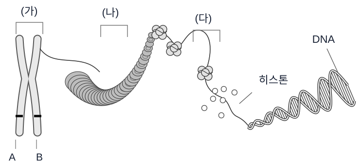
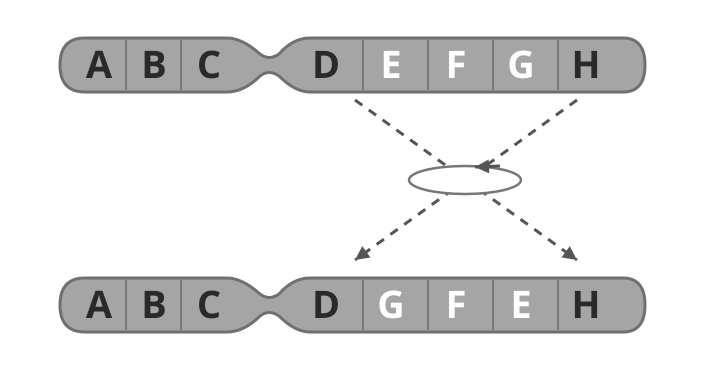

객관식 p1. 생체분자 용어의 분류 36. 다음 용어들 중 다른 보기들과 가장 공통점이 없는 것은 무엇인가?
(1) 단당류 (2) 트라이글리세리드 (3) 지방 (4) 스테로이드 (5) 인지질
답 선택
강의노트 1.2.3: 지질은 중성지질(트라이글리세라이드·지방), 인지질, 스테로이드를 포함한다. 단당류만 탄수화물이므로 나머지와 공통점이 가장 적다. 답 A. 정답: A
{"origin": "past", "mode": "original", "refs": [{"path": "복습노트/0903/복습문제_0903_Biomolecules_and_Cells.html", "sha256": "96abc077de9bbac63f889b64f6b33593b22a5f84625e1a7607073896ebd85e56", "locator": "p31", "role": "past_review_card"}, {"path": "23, 24 소스/1강 합본.pdf", "sha256": "734b68436fc7a4e55f24360495ef46ab5d85ce25499a9576681adabd20b9ff7b", "locator": "PDF p3 문항 36, 빨간 표시 ① 단당류", "role": "past_pdf"}, {"path": "강의노트/1장 생명분자와 세포.pdf", "sha256": "460f5c2602e374bf284642c5f26bf4003e1ddd651fc5f0e8a602939b0d52dd33", "locator": "PDF p2-3 1.2.2~1.2.3", "role": "teaching"}], "reason": "기출 원문. 지질 3종과 탄수화물을 분류.", "style_basis": [{"path": ".agents/skills/bio-review-pack/references/webquiz-style.md", "sha256": "d280de9ddd898cab6e8af76526e6979755f04443a2b429bbd03b772f6b7e9c35", "locator": "3. 유형 > 비교 단위·분류 경계", "criterion": "분류 기준(지질/탄수화물) 판별", "application": "같은 분류 4개와 다른 1개 구별"}]}
p2. 당-인산 골격을 가진 고분자 다음 중 연속된 당-인산 사슬을 포함하는 고분자는?
(1) 단백질 (2) 지질 (3) 핵산 (4) 다당류
답 선택
강의노트 1.2.5: 핵산 사슬의 뼈대는 당의 5′ 탄소–인산기–당의 3′ 탄소 연결이다. 단백질은 펩타이드 결합, 지질은 중합체가 아니며, 다당류는 당끼리 연결되고 인산이 없다. 답은 핵산(C). 정답: C
{"origin": "past", "mode": "original", "refs": [{"path": "복습노트/0908/복습문제_0908_Biomolecules_and_Cells.html", "sha256": "855b6be93e5549812fef645b5532b8615085c8b31f71e4802f238c6c7f4933c0", "locator": "p11", "role": "past_review_card"}, {"path": "23, 24 소스/1강 합본.pdf", "sha256": "734b68436fc7a4e55f24360495ef46ab5d85ce25499a9576681adabd20b9ff7b", "locator": "PDF p1 문항 14, 빨간 표시 ③ 핵산", "role": "past_pdf"}, {"path": "강의노트/1장 생명분자와 세포.pdf", "sha256": "460f5c2602e374bf284642c5f26bf4003e1ddd651fc5f0e8a602939b0d52dd33", "locator": "PDF p4 1.2.5 핵산 사슬의 뼈대", "role": "teaching"}], "reason": "기출 원문. 핵산 사슬의 뼈대를 판별.", "style_basis": [{"path": ".agents/skills/bio-review-pack/references/webquiz-style.md", "sha256": "d280de9ddd898cab6e8af76526e6979755f04443a2b429bbd03b772f6b7e9c35", "locator": "1. 출처·2. 수치", "criterion": "기출은 원문을 그대로 쓰는 별도 출처", "application": "기출 원문 보존"}]}
p3. 단백질 고차 구조의 안정화 화학결합 중, 단백질의 2차 및 3차 구조의 안정성을 더해주는 결합으로 맞는 것은?
공유결합 이온결합 반데르발스 힘 수소결합 비극성 공유결합
답 선택
2차 구조(α-나선·β-병풍)는 폴리펩타이드 사슬 부위 사이의 수소결합으로 유지되고, 3차 구조에도 수소결합이 기여한다. 3차 구조에는 이온결합 등도 관여하지만 두 수준에 공통인 결합은 수소결합이다. 답 D(분석 답). 정답: D
{"origin": "web", "mode": "original", "refs": [{"path": "웹과제/1장/questions.json", "sha256": "9e53575519a304b5f370d50e267c58fc1ce5d995ac2659a8f709723cd18dff7d", "locator": "web-20260917-ch01:q13", "role": "bank"}, {"path": "웹과제/1장/raw/스크린샷 2026-09-17 오후 12.12.26.png", "sha256": "c61b8f4d14ed2aef921b22b410edfb2b6622fd98741d0e219007fd091f5fa798", "locator": "문제 13 원본 화면", "role": "bank_raw"}, {"path": "강의노트/1장 생명분자와 세포.pdf", "sha256": "460f5c2602e374bf284642c5f26bf4003e1ddd651fc5f0e8a602939b0d52dd33", "locator": "PDF p2 1.1.3 수소결합, p4 1.2.4 단백질 구조", "role": "teaching"}, {"path": "교과서/생명과학_기초와_응용_2판/01장_생물분자와_세포.pdf", "sha256": "78f993b661f74f7d039d65afc1431d2d27521474e38617d2b4b819318e421455", "locator": "PDF p13 / 인쇄 p14 3차 구조 상호작용", "role": "teaching"}, {"path": "웹과제/1장/evidence/0903.md", "sha256": "0c4feb467f1b623382d8b951ca61496bdbcf93b2611ea02110ba64394dd5a3cb", "locator": "§5-3 2차 구조 수소결합", "role": "bank_evidence"}], "reason": "단백질 2·3차 구조에 공통으로 기여하는 결합을 묻는 원문.", "style_basis": [{"path": ".agents/skills/bio-review-pack/references/webquiz-style.md", "sha256": "d280de9ddd898cab6e8af76526e6979755f04443a2b429bbd03b772f6b7e9c35", "locator": "2. 수치 — 1장 새 문항 15/17", "criterion": "1장 웹과제는 대부분 새 문항", "application": "기출에 없는 웹 원문 사용"}]}
p4. 생물 분류의 3영역 생물분류의 3영역(domain)을 바르게 나타내는 것은?
고세균 / 원핵생물 / 식물 진정세균 / 원생생물 / 고세균 고세균 / 진정세균 / 식물 진정세균 / 원생생물 / 균 고세균 / 진정세균 / 진핵생물
답 선택
강의노트는 원핵생물을 진정세균 영역·고세균 영역으로, 진핵생물을 진핵생물 영역으로 나눈다. 식물·원생생물·균은 진핵생물 영역 안의 계이므로 영역 이름이 아니다. 답은 고세균/진정세균/진핵생물(E). 정답: E
{"origin": "web", "mode": "original", "refs": [{"path": "웹과제/1장/questions.json", "sha256": "9e53575519a304b5f370d50e267c58fc1ce5d995ac2659a8f709723cd18dff7d", "locator": "web-20260917-ch01:q10", "role": "bank"}, {"path": "웹과제/1장/raw/스크린샷 2026-09-17 오후 12.11.55.png", "sha256": "0171f44c1219aaa2cd32597b4eb3bae472fba580c193b2d52df871065ea3fc6f", "locator": "문제 10 원본 화면", "role": "bank_raw"}, {"path": "강의노트/1장 생명분자와 세포.pdf", "sha256": "460f5c2602e374bf284642c5f26bf4003e1ddd651fc5f0e8a602939b0d52dd33", "locator": "PDF p1 1.1.1 3 영역과 계로 분류", "role": "teaching"}], "reason": "강의노트 1.1.1의 3영역 분류를 확인하는 원문.", "style_basis": [{"path": ".agents/skills/bio-review-pack/references/webquiz-style.md", "sha256": "d280de9ddd898cab6e8af76526e6979755f04443a2b429bbd03b772f6b7e9c35", "locator": "3. 유형 > 비교 단위·분류 경계", "criterion": "같은 이름이 어느 분류 단위(영역/계)인지 구별", "application": "영역과 계를 섞은 오답 보기 판별"}]}
p5. 리소좀 기능과 세포 선택 리소좀을 연구하기에 가장 좋은 세포 종류는?
근육세포 세균 산소가 부족한 근육세포 식물의 잎세포 식균작용을 하는 백혈구
답 선택
리소좀은 가수분해효소로 세포내 소화를 하고 식균작용에 쓰인다(강의노트 1.3.3). 먹어 들인 물질을 소화하는 일이 많은 세포일수록 리소좀이 풍부하므로, 식균작용을 하는 백혈구(E)가 가장 적합하다. 세균은 원핵세포라 리소좀 같은 막성 소기관이 없다. 정답: E
{"origin": "web", "mode": "original", "refs": [{"path": "웹과제/1장/questions.json", "sha256": "9e53575519a304b5f370d50e267c58fc1ce5d995ac2659a8f709723cd18dff7d", "locator": "web-20260917-ch01:q05", "role": "bank"}, {"path": "웹과제/1장/raw/스크린샷 2026-09-17 오후 12.11.28.png", "sha256": "1b65d837de034e8f24cc869e21aa7566dff958dc6e2260a272d32569b5f69e40", "locator": "문제 5 원본 화면", "role": "bank_raw"}, {"path": "강의노트/1장 생명분자와 세포.pdf", "sha256": "460f5c2602e374bf284642c5f26bf4003e1ddd651fc5f0e8a602939b0d52dd33", "locator": "PDF p5 1.3.3 리소좀: 가수분해효소, 세포내 소화, 식균작용", "role": "teaching"}], "reason": "세포소기관 기능을 세포 종류 선택에 적용하는 상황 전이 원문.", "style_basis": [{"path": ".agents/skills/bio-review-pack/references/webquiz-style.md", "sha256": "d280de9ddd898cab6e8af76526e6979755f04443a2b429bbd03b772f6b7e9c35", "locator": "3. 유형 > 상황 전이", "criterion": "배운 원리를 새 상황에 적용", "application": "리소좀의 기능 → 그 기능이 많이 필요한 세포 고르기"}]}
p6. 생체분자와 구성 단위의 연결 다음 유기분자와 그 단위체의 연결이 올바르지 않은 것은?
탄수화물 - 단당류, 이당류, 다당류가 있다 트라이글리세라이드 - 지방산과 글리세롤로 구성된다 단백질 - 아미노산들이 펩티드 결합을 형성한다 핵산 - 뉴클레오타이드의 중합체다 인지질 - 3개의 인산기와 1개의 글리세롤이 결합한다
답 선택
트라이글리세라이드는 글리세롤+지방산 3개, 단백질은 펩타이드 결합, 핵산은 뉴클레오타이드 중합체다(강의노트 1.2). 인지질은 인산기 1개+글리세롤+지방산 2개이므로 "인산기 3개"는 틀렸다. 답 E. 정답: E
{"origin": "web", "mode": "original", "refs": [{"path": "웹과제/1장/questions.json", "sha256": "9e53575519a304b5f370d50e267c58fc1ce5d995ac2659a8f709723cd18dff7d", "locator": "web-20260917-ch01:q11", "role": "bank"}, {"path": "웹과제/1장/raw/스크린샷 2026-09-17 오후 12.12.11.png", "sha256": "9b97780cfc7a6abf486008a47d460a1f70c3ea197dc0f3d4153689c0fd9a19a6", "locator": "문제 11 원본 화면", "role": "bank_raw"}, {"path": "강의노트/1장 생명분자와 세포.pdf", "sha256": "460f5c2602e374bf284642c5f26bf4003e1ddd651fc5f0e8a602939b0d52dd33", "locator": "PDF p3 1.2.3 중성지질·인지질 구성", "role": "teaching"}], "reason": "중성지질과 인지질의 구성을 혼동하게 하는 부정형 원문.", "style_basis": [{"path": ".agents/skills/bio-review-pack/references/webquiz-style.md", "sha256": "d280de9ddd898cab6e8af76526e6979755f04443a2b429bbd03b772f6b7e9c35", "locator": "2. 수치 — 부정형 39%", "criterion": "부정형 비중을 참고", "application": "부정형 원문 1개로 포함"}, {"path": ".agents/skills/bio-review-pack/references/note-feedback.md", "sha256": "2b945c5cfd5014ba3050731d7b6151a8fc52ba5c7cc6e163516d987a0e5b3520", "locator": "명칭·비교 단위의 충족 기준", "criterion": "구성 단위의 개수·종류를 대상별로 구별", "application": "인지질의 인산기 수를 중성지질 지방산 수와 구별"}]}
p7. 살아 있는 세포의 필수 조건 과학자들이 "가생이"이라는 미지의 물질을 발견했다. 이 물질을 살아있는 세포로 판단하려면, 아래의 조건들 중 "가생이"가 반드시 가져야 할 필수 조건이 무엇인지 있는대로 모두 고른 것은?
a. 외부와는 다른 자신만의 환경조성을 가지도록 막으로 둘러싸인다. b. 유전물질이 있어서 증식을 할 수 있다. c. 물질대사를 한다. d. 핵 내부 물질이 섞이는 것을 방지하도록 핵막이 있다.
답 선택
모든 세포에 공통인 조건을 고른다: 경계막(a), 유전물질과 증식(b), 물질대사(c)는 생물의 특성(강의노트 1.1.1)이다. 원핵세포는 핵막이 없어 DNA가 핵양체로 존재하므로(1.3.1) d는 "반드시"가 아니다. 답은 a, b, c(B). 정답: B
{"origin": "web", "mode": "original", "refs": [{"path": "웹과제/1장/questions.json", "sha256": "9e53575519a304b5f370d50e267c58fc1ce5d995ac2659a8f709723cd18dff7d", "locator": "web-20260917-ch01:q06", "role": "bank"}, {"path": "웹과제/1장/raw/스크린샷 2026-09-17 오후 12.11.33.png", "sha256": "6779145dfb38add0e9b15bea6c856b0bd8ab3274b2683cbfa5a8d2ea645318d6", "locator": "문제 6 원본 화면(a~d 진술 포함)", "role": "bank_raw"}, {"path": "강의노트/1장 생명분자와 세포.pdf", "sha256": "460f5c2602e374bf284642c5f26bf4003e1ddd651fc5f0e8a602939b0d52dd33", "locator": "PDF p1 1.1.1, p5 1.3.1 원핵생물 핵막 없음", "role": "teaching"}], "reason": "원핵세포를 반례로 핵막이 필수 조건이 아님을 판별하는 합답형 원문.", "style_basis": [{"path": ".agents/skills/bio-review-pack/references/webquiz-style.md", "sha256": "d280de9ddd898cab6e8af76526e6979755f04443a2b429bbd03b772f6b7e9c35", "locator": "3. 유형 > ㄱㄴㄷ — 실제 예 1장 q6", "criterion": "여러 진술을 하나씩 판정하는 합답형", "application": "원문 a~d 4진술·4보기를 그대로 보존(생성 형식으로 바꾸지 않음)"}]}
p8. 미토콘드리아와 엽록체의 구조 미토콘드리아와 엽록체의 구조에 대한 설명으로 옳지 않은 것은?
두 소기관은 모두 외막과 내막의 이중막으로 둘러싸여 있다 미토콘드리아의 내막은 여러 번 접혀 크리스테를 이룬다 미토콘드리아 기질은 외막과 내막 사이의 좁은 공간을 가리킨다 엽록체 안에서 틸라코이드가 쌓인 구조를 그라나라고 한다 엽록체의 스트로마는 내막 안쪽을 채운 유동액 부위이다
답 선택
강의노트 1.3.3·1.3.4: 미토콘드리아·엽록체 모두 이중막, 미토콘드리아 내막은 크리스테, 엽록체의 틸라코이드 다발은 그라나, 스트로마는 내부 공간이다. 미토콘드리아 기질은 "내막 내부의 공간"이다. 외막과 내막 사이는 막 사이 구획(막간 공간)이므로 C가 옳지 않다. 정답: C
{"origin": "web", "mode": "variant", "refs": [{"path": "웹과제/1장/questions.json", "sha256": "9e53575519a304b5f370d50e267c58fc1ce5d995ac2659a8f709723cd18dff7d", "locator": "web-20260917-ch01:q04 원문 발문·보기·ambiguous 판정", "role": "bank"}, {"path": "강의노트/1장 생명분자와 세포.pdf", "sha256": "460f5c2602e374bf284642c5f26bf4003e1ddd651fc5f0e8a602939b0d52dd33", "locator": "PDF p5 1.3.3 미토콘드리아 이중막·크리스테·기질, p6 1.3.4 엽록체 스트로마·틸라코이드·그라나", "role": "teaching"}, {"path": "강의노트/2장 세포호흡과 광합성.pdf", "sha256": "d73db7dd54af5ffac2232acd74f8a4084ce2b9a11e73be9c8331fd59632db89f", "locator": "PDF p3 2.2.4 막 사이 구획", "role": "teaching"}], "reason": "원문 q04의 내막계 분류 모호성을 제거하고 두 소기관의 구획 위치를 판별하게 한 변형.", "style_basis": [{"path": ".agents/skills/bio-review-pack/references/webquiz-style.md", "sha256": "d280de9ddd898cab6e8af76526e6979755f04443a2b429bbd03b772f6b7e9c35", "locator": "3. 유형 > 비교 단위·분류 경계", "criterion": "같은 단어가 어느 구획을 가리키는지 구별", "application": "기질(내막 안)과 막간 공간(외막-내막 사이) 위치를 구별"}, {"path": ".agents/skills/bio-review-pack/references/webquiz-style.md", "sha256": "d280de9ddd898cab6e8af76526e6979755f04443a2b429bbd03b772f6b7e9c35", "locator": "2. 수치 — 부정형", "criterion": "부정형 참고 비중", "application": "원문 부정형 발문 유지"}]}
p9. 세포소기관의 구조와 기능 세포 소기관의 설명으로 옳지 않은 것은?
활면소포체는 지질을 합성하는 장소이다 핵에는 핵공이 있어 이를 통해 염색체가 자유로이 드나든다 핵막은 이중막이다 세포막은 인지질의 이중층으로 되어 있다 미토콘드리아는 ATP를 만드는 전자전달사슬이 있다
답 선택
A 활면소포체 지질 합성, C 핵막 이중막, D 인지질 이중층, E 미토콘드리아 전자전달사슬은 강의노트 1.3.3·1.4와 맞다. 핵공은 핵과 세포질 사이 물질 이동 통로이지만 염색체가 자유로이 드나드는 곳이 아니다. 염색체는 핵 안에 남는다. 옳지 않은 것은 B. 정답: B
{"origin": "web", "mode": "original", "refs": [{"path": "웹과제/1장/questions.json", "sha256": "9e53575519a304b5f370d50e267c58fc1ce5d995ac2659a8f709723cd18dff7d", "locator": "web-20260917-ch01:q07", "role": "bank"}, {"path": "웹과제/1장/raw/스크린샷 2026-09-17 오후 12.11.37.png", "sha256": "f6a03d23f1041866fa04f82893a0eac63f675b21a434309d66623ca13f330ac7", "locator": "문제 7 원본 화면", "role": "bank_raw"}, {"path": "강의노트/1장 생명분자와 세포.pdf", "sha256": "460f5c2602e374bf284642c5f26bf4003e1ddd651fc5f0e8a602939b0d52dd33", "locator": "PDF p5 1.3.3 핵공·활면소포체·미토콘드리아", "role": "teaching"}, {"path": "23, 24 소스/1강 합본.pdf", "sha256": "734b68436fc7a4e55f24360495ef46ab5d85ce25499a9576681adabd20b9ff7b", "locator": "PDF p1 문항 11(같은 문항) 빨간 표시 ④", "role": "past_pdf"}], "reason": "웹과제 1장 q07은 기출 1강 11과 같은 문항(보기 순서만 다름)으로 재등장했다.", "style_basis": [{"path": ".agents/skills/bio-review-pack/references/webquiz-style.md", "sha256": "d280de9ddd898cab6e8af76526e6979755f04443a2b429bbd03b772f6b7e9c35", "locator": "2. 수치 — 기출과 거의 같음(보기 순서만 바뀜)", "criterion": "기출 보기 순서만 바뀐 재사용 관찰", "application": "웹 원문의 보기 순서를 보존하고 기출과 같은 가족으로 묶음"}]}
p10. 원자핵의 구성 입자
답 선택
원자는 핵과 전자로 이루어지고, 강의노트 1.1.2는 원자핵이 양성자와 중성자를 가진다고 정리한다. 전자는 핵 밖에 있으므로 D·E를 제외하고, 양성자만·중성자만인 B·C는 일부만 고른 보기다. 따라서 A가 답이다(분석 답, 공식 답 미확인). 정답: A
{"origin": "web", "mode": "original", "refs": [{"path": "웹과제/1장/questions.json", "sha256": "9e53575519a304b5f370d50e267c58fc1ce5d995ac2659a8f709723cd18dff7d", "locator": "web-20260917-ch01:q01", "role": "bank"}, {"path": "웹과제/1장/raw/스크린샷 2026-09-17 오후 12.11.14.png", "sha256": "00e98783d1d9575acc2342cace8f3c8041cdca93405da81b73d00ed8a78aad37", "locator": "문제 1 원본 화면", "role": "bank_raw"}, {"path": "강의노트/1장 생명분자와 세포.pdf", "sha256": "460f5c2602e374bf284642c5f26bf4003e1ddd651fc5f0e8a602939b0d52dd33", "locator": "PDF p1 1.1.2 원자핵은 양성자와 중성자", "role": "teaching"}, {"path": "23, 24 소스/1강 합본.pdf", "sha256": "734b68436fc7a4e55f24360495ef46ab5d85ce25499a9576681adabd20b9ff7b", "locator": "PDF p1 문항 18(같은 문항) 빨간 표시 ③ 중성자와 양성자", "role": "past_pdf"}], "reason": "웹과제 1장 q01은 기출 1강 18과 같은 문항으로 서로 다른 평가에 재등장했다.", "style_basis": [{"path": ".agents/skills/bio-review-pack/references/webquiz-style.md", "sha256": "d280de9ddd898cab6e8af76526e6979755f04443a2b429bbd03b772f6b7e9c35", "locator": "2. 수치 — 기출과 거의 같음(1장 2문항)", "criterion": "기출과 거의 같은 원문이 웹과제에 다시 나온 관찰", "application": "기출 1강 18과 같은 발문·보기 집합의 웹 원문을 그대로 보존(보기 순서는 웹 원문 순서)"}]}
p11. 요구르트 신맛의 원인 요구르트의 신맛의 원인은 무엇인가?
(1) 시트르산 회로에서 미생물에 의해 방출된 시트르산 (2) 해당과정 동안에 미생물에 의해 생성된 ADP (3) 미생물에 의해 무기호흡과정 동안 생성된 젖산 (4) 미생물에 의해 지방이 분해되어 나온 지방산
답 선택
요구르트는 젖산균이 산소 없이 당을 발효하여 만든다. 젖산발효는 피루브산을 젖산으로 환원한다(2.2.5). 신맛의 원인은 젖산(C). 시트르산 회로·지방 분해는 이 과정과 무관. 정답: C
{"origin": "past", "mode": "original", "refs": [{"path": "복습노트/0915/복습문제_0915_Cellular_Respiration_and_Photosynthesis.html", "sha256": "2e47702efa8ff09a142e1cc1ca0a19e4de574c23221b8c2937df83aab83687d3", "locator": "p13", "role": "past_review_card"}, {"path": "23, 24 소스/2강 합본.pdf", "sha256": "8155cfcb6b9cf49ddc63624216239114c1d8e4625bd55fdd0f3f8b71838b600e", "locator": "PDF p3 문항 36, 빨간 표시 ③", "role": "past_pdf"}, {"path": "강의노트/2장 세포호흡과 광합성.pdf", "sha256": "d73db7dd54af5ffac2232acd74f8a4084ce2b9a11e73be9c8331fd59632db89f", "locator": "PDF p3 2.2.5 젖산발효·젖산균", "role": "teaching"}], "reason": "기출 원문. 발효 개념을 식품 사례에 적용.", "style_basis": [{"path": ".agents/skills/bio-review-pack/references/webquiz-style.md", "sha256": "d280de9ddd898cab6e8af76526e6979755f04443a2b429bbd03b772f6b7e9c35", "locator": "3. 유형 > 상황 전이", "criterion": "배운 원리를 생활 사례에 적용", "application": "젖산발효 → 요구르트"}]}
p12. 전자전달계의 최종 전자 수용체 세포호흡 과정에서 전자전달계의 최종 전자 수용체는?
(1) 탄소 (2) 물 (3) 수소 (4) 산소 (5) 이산화탄소
답 선택
강의노트 2.2.4: 전자는 전자전달계를 따라 흘러 최종적으로 산소(O₂)에 전달된다. 답 산소(D). 물은 산소가 전자와 H⁺를 받아 생기는 산물이다. 정답: D
{"origin": "past", "mode": "original", "refs": [{"path": "복습노트/0910/복습문제_0910_Cells_and_Cellular_Respiration.html", "sha256": "36647ba4de133abce1e801a89919ad65577f455d9378cf0a8ecb3d2201ef61a2", "locator": "p19", "role": "past_review_card"}, {"path": "23, 24 소스/2강 합본.pdf", "sha256": "8155cfcb6b9cf49ddc63624216239114c1d8e4625bd55fdd0f3f8b71838b600e", "locator": "PDF p3 문항 27, 빨간 표시 ④ 산소", "role": "past_pdf"}, {"path": "강의노트/2장 세포호흡과 광합성.pdf", "sha256": "d73db7dd54af5ffac2232acd74f8a4084ce2b9a11e73be9c8331fd59632db89f", "locator": "PDF p3 2.2.4", "role": "teaching"}], "reason": "기출 원문. 전자 흐름의 종착점 확인.", "style_basis": [{"path": ".agents/skills/bio-review-pack/references/webquiz-style.md", "sha256": "d280de9ddd898cab6e8af76526e6979755f04443a2b429bbd03b772f6b7e9c35", "locator": "1. 출처", "criterion": "기출 원문 별도 출처", "application": "원문 보존"}]}
p13. 해당과정의 산물 해당과정의 산물은?
피루브산, NADH, ATP 젖산과 피루브산 ATP, NADPH ADP와 NAD+ 피루브산과 ADP
답 선택
강의노트 2.2.2: 포도당 + 2ADP + 2Pi + 2NAD⁺ → 2 피루브산 + 2NADH + 2H⁺ + 2ATP. 젖산은 발효 산물, NADPH는 광합성 운반체, ADP·NAD⁺는 반응물이다. 답 A. 정답: A
{"origin": "web", "mode": "original", "refs": [{"path": "웹과제/2장/questions.json", "sha256": "e0d4dec4e995a271e88386a21ebfa9ab09a3b1173381cd38b954d7553b1c7658", "locator": "web-20261001-ch02:q12", "role": "bank"}, {"path": "웹과제/2장/raw/스크린샷 2026-10-01 오후 12.09.12.png", "sha256": "8579a027cee5fbd27a93d082762718b01cb81fe7865efd5308f111a2d5291e7c", "locator": "문제 12 원본 화면", "role": "bank_raw"}, {"path": "강의노트/2장 세포호흡과 광합성.pdf", "sha256": "d73db7dd54af5ffac2232acd74f8a4084ce2b9a11e73be9c8331fd59632db89f", "locator": "PDF p2 2.2.2 해당과정 반응식", "role": "teaching"}], "reason": "해당과정 산물을 발효 산물·광합성 운반체와 구별.", "style_basis": [{"path": "웹과제/2장/note-feedback.md", "sha256": "9b8e735f5f7ca64f7af9d65a390f0492e4215ea6e27385180960a084e5325056", "locator": "web-20261001-ch02:q12", "criterion": "해당과정 산물과 발효 산물/반응물 구분", "application": "오답 보기 진단에 반영"}]}
p14. 세포호흡 단계별 산물 세포호흡 전체 과정의 개요 모식도이다. 아래 과정에서 옳지 않은 설명은?
이산화탄소는 (다) 과정에서 생성된다 NADH는 (가)와 (나)에서 모두 생성된다 (가) ~ (다) 중 산화적 인산화는 (다) 과정에서 일어난다 (나)에서 NADH와 FADH2가 생성된다 해당과정 결과 2개의 ATP가 생성된다
답 선택
모식도의 순서는 해당과정 → (가) 피루브산 산화 → (나) 시트르산 회로(순환 화살표) → (다) 전자전달계·산화적 인산화다. CO₂는 피루브산 산화(가)와 시트르산 회로(나)에서 나오고 (다)에서는 생기지 않는다. NADH는 (가)·(나) 모두, FADH₂는 (나), 해당과정 순 ATP 2개 → 옳지 않은 것은 A. 정답: A
{"origin": "web", "mode": "original", "refs": [{"path": "웹과제/2장/questions.json", "sha256": "e0d4dec4e995a271e88386a21ebfa9ab09a3b1173381cd38b954d7553b1c7658", "locator": "web-20261001-ch02:q09", "role": "bank"}, {"path": "웹과제/2장/raw/스크린샷 2026-10-01 오후 12.07.01.png", "sha256": "e5133b113fe4efce49906011ab5df62df372a57396b7d02c1baabb7b723d5df0", "locator": "문제 9 원본 화면(모식도)", "role": "bank_raw"}, {"path": "웹과제/2장/image/q09.svg", "sha256": "ec269182ad88b81a554d319fed311d7f4647a2eeef0b884304b2f22eb53bcb2d", "locator": "문제용 SVG", "role": "bank_asset_exam"}, {"path": "강의노트/2장 세포호흡과 광합성.pdf", "sha256": "d73db7dd54af5ffac2232acd74f8a4084ce2b9a11e73be9c8331fd59632db89f", "locator": "PDF p2-3 2.2.1~2.2.4", "role": "teaching"}], "reason": "라벨을 가린 세포호흡 모식도에서 단계를 판독하고 CO₂ 생성 단계를 판별.", "style_basis": [{"path": ".agents/skills/bio-review-pack/references/webquiz-style.md", "sha256": "d280de9ddd898cab6e8af76526e6979755f04443a2b429bbd03b772f6b7e9c35", "locator": "3. 유형 > 그림 — 실제 예 2장 q9", "criterion": "라벨을 가린 모식도의 배열을 읽어야 풀림", "application": "원본 모식도(가)(나)(다) 판독 원문 사용"}, {"path": "웹과제/2장/note-feedback.md", "sha256": "9b8e735f5f7ca64f7af9d65a390f0492e4215ea6e27385180960a084e5325056", "locator": "web-20261001-ch02:q09", "criterion": "(가)피루브산 산화/(나)시트르산/(다)산화적 인산화; CO₂ 배출 단계", "application": "단계 판독 후 CO₂ 단계 판별을 풀이에 반영"}]}
p15. H⁺ 농도 기울기를 이용하는 막 전자가 전자전달계를 따라 이동하며 방출한 에너지로 H⁺가 막을 가로질러 능동 수송되고, 이렇게 생긴 H⁺ 농도 차를 이용해 ATP가 합성된다. 식물의 잎세포에서 이 방식으로 ATP를 합성하는 막만을 있는 대로 고른 것은?
ㄱ. 미토콘드리아 외막 ㄴ. 미토콘드리아 내막 ㄷ. 엽록체의 틸라코이드막
답 선택
세포호흡의 전자전달계는 미토콘드리아 내막에서 H⁺를 막 사이 구획으로 퍼내고, 그 기울기로 ATP를 만든다(2.2.4). 외막은 아니다. 광의존반응도 틸라코이드막에서 H⁺ 기울기를 만들어 ATP를 합성한다(광인산화, 2.3.2). 식물 잎세포는 엽록체와 미토콘드리아를 모두 가진다. 답 ㄴ, ㄷ. 정답: D
{"origin": "web", "mode": "variant", "refs": [{"path": "웹과제/2장/questions.json", "sha256": "e0d4dec4e995a271e88386a21ebfa9ab09a3b1173381cd38b954d7553b1c7658", "locator": "web-20261001-ch02:q06 원문(주어 누락 issue)", "role": "bank"}, {"path": "강의노트/2장 세포호흡과 광합성.pdf", "sha256": "d73db7dd54af5ffac2232acd74f8a4084ce2b9a11e73be9c8331fd59632db89f", "locator": "PDF p3 2.2.4 미토콘드리아 내막 양성자 기울기, p4-5 2.3.2 틸라코이드막 광인산화", "role": "teaching"}, {"path": "STT/0910 생명.md", "sha256": "d88fbc55eda6e93446507aa34ca01d3afb9ba802e17a9b7604e2a584ed92fdc0", "locator": "Part 07 69:12 식물도 미토콘드리아", "role": "teaching"}], "reason": "원문 q06의 주어 누락을 고쳐 식물 세포의 두 화학삼투 막을 합답형으로 판별.", "style_basis": [{"path": ".agents/skills/bio-review-pack/references/webquiz-style.md", "sha256": "d280de9ddd898cab6e8af76526e6979755f04443a2b429bbd03b772f6b7e9c35", "locator": "3. 유형 > ㄱㄴㄷ", "criterion": "진술을 하나씩 판정, 함정 하나는 인접 개념", "application": "외막을 인접 구조 함정으로 둠"}, {"path": "웹과제/2장/note-feedback.md", "sha256": "9b8e735f5f7ca64f7af9d65a390f0492e4215ea6e27385180960a084e5325056", "locator": "web-20261001-ch02:q06", "criterion": "식물도 미토콘드리아로 호흡; 두 막의 공통 원리", "application": "두 막을 함께 고르게 함"}]}
p16. 효소 첨가 전후의 비교 생성물의 자유에너지가 반응물보다 낮은 어떤 반응에 그 반응을 촉매하는 효소를 넣었더니 반응 속도가 크게 빨라졌다. 온도 등 다른 조건이 같을 때, 효소를 넣기 전과 비교하여 변하지 않는 것은?
반응이 시작되기 위해 넘어야 하는 활성화 에너지의 크기 같은 시간 동안 생성물로 바뀌는 반응물의 양 반응물과 생성물 사이의 자유에너지 차이 효소의 활성부위에 기질이 결합한 복합체가 생기는지 여부 단위 시간당 반응 속도
답 선택
효소는 활성화 에너지(봉우리 높이)를 낮춰 반응을 빠르게 한다. 따라서 A·E와 일정 시간 생성량(B)은 달라진다. 효소가 있으면 효소-기질 결합도 새로 생긴다(D). 반응물과 생성물의 에너지 수준 자체는 효소가 바꾸지 않으므로 둘의 차이(반응 전후 자유에너지 차)는 그대로다. 답 C. 정답: C
{"origin": "new", "mode": "generated", "refs": [{"path": "강의노트/2장 세포호흡과 광합성.pdf", "sha256": "d73db7dd54af5ffac2232acd74f8a4084ce2b9a11e73be9c8331fd59632db89f", "locator": "PDF p1 2.1.2 활성화 에너지·효소는 활성화 에너지 감소·활성부위", "role": "teaching"}, {"path": "STT/0910 생명.md", "sha256": "d88fbc55eda6e93446507aa34ca01d3afb9ba802e17a9b7604e2a584ed92fdc0", "locator": "31:03~31:46 생성물이 반응물보다 낮아 자발적, 효소는 언덕 높이만 낮춤", "role": "teaching"}, {"path": "웹과제/2장/questions.json", "sha256": "e0d4dec4e995a271e88386a21ebfa9ab09a3b1173381cd38b954d7553b1c7658", "locator": "web-20261001-ch02:q04 option_diagnostics A(효소는 IV를 바꾸지 않음)", "role": "bank"}], "reason": "효소는 활성화 에너지를 낮추지만 반응 전후 자유에너지 차는 바꾸지 않음을 구별(2장 q04 판별 기준의 그림 없는 전이).", "style_basis": [{"path": ".agents/skills/bio-review-pack/references/webquiz-style.md", "sha256": "d280de9ddd898cab6e8af76526e6979755f04443a2b429bbd03b772f6b7e9c35", "locator": "3. 유형 > 상황 전이", "criterion": "원리를 새 조건에 적용, 원인 하나만 바꾸고 결과를 물음", "application": "효소 첨가만 바꾸고 변하지 않는 양을 묻는다"}, {"path": "웹과제/2장/note-feedback.md", "sha256": "9b8e735f5f7ca64f7af9d65a390f0492e4215ea6e27385180960a084e5325056", "locator": "web-20261001-ch02:q04", "criterion": "반응물 높이→봉우리 높이가 Ea; 바닥 기준 높이/ΔG와 구분", "application": "봉우리 높이와 반응 전후 차이를 다른 보기로 분리"}]}
p17. 동화작용과 이화작용의 구분 다음 중 동화작용(anabolic reaction)에 해당하는 것만을 있는 대로 고른 것은?
ㄱ. 엽록체에서 이산화탄소와 물로부터 포도당을 합성한다. ㄴ. 세포호흡에서 포도당을 이산화탄소와 물로 분해한다. ㄷ. 아미노산을 펩타이드 결합으로 연결하여 단백질을 만든다.
답 선택
강의노트 2.1.1: 이화작용은 당 같은 복합 분자를 분해, 동화작용은 간단한 기질을 복합 분자로 조립(예: 광합성, 아미노산을 단백질로 합성). ㄱ 광합성, ㄷ 단백질 합성은 동화작용이고 ㄴ 포도당 분해는 이화작용이다. 답 ㄱ, ㄷ. 정답: E
{"origin": "new", "mode": "generated", "refs": [{"path": "강의노트/2장 세포호흡과 광합성.pdf", "sha256": "d73db7dd54af5ffac2232acd74f8a4084ce2b9a11e73be9c8331fd59632db89f", "locator": "PDF p1 2.1.1 이화작용·동화작용 정의와 예", "role": "teaching"}, {"path": "강의노트/1장 생명분자와 세포.pdf", "sha256": "460f5c2602e374bf284642c5f26bf4003e1ddd651fc5f0e8a602939b0d52dd33", "locator": "PDF p3 1.2.4 펩타이드 결합", "role": "teaching"}], "reason": "2장 강의노트 2.1.1의 이화/동화 구분을 사례로 판정하는 누락 토픽 점검.", "style_basis": [{"path": ".agents/skills/bio-review-pack/references/webquiz-style.md", "sha256": "d280de9ddd898cab6e8af76526e6979755f04443a2b429bbd03b772f6b7e9c35", "locator": "3. 유형 > ㄱㄴㄷ", "criterion": "진술 판정 합답형, 진술끼리 답을 알려 주지 않음", "application": "분해/합성 방향만으로 판정하게 구성"}, {"path": ".agents/skills/bio-review-pack/references/webquiz-style.md", "sha256": "d280de9ddd898cab6e8af76526e6979755f04443a2b429bbd03b772f6b7e9c35", "locator": "4. 할당 — 남는 자리는 혼동 묶음", "criterion": "인접 개념 묶음", "application": "이화/동화 방향 혼동"}]}
p18. ATP가 에너지를 내는 방식 아래 분자는 어떻게 세포에 에너지를 제공하는가?
미토콘드리아에서 에너지를 생성하는 데 사용되는 양성자를 방출한다 위치에너지를 생성하기 위해 미토콘드리아 막을 통과하는 전자를 운반한다 인산기를 잃으면서 에너지를 방출한다 염기를 잃으면서 에너지를 방출한다 에너지 원천인 전자를 방출한다
답 선택
그림은 아데닌–리보스–인산 3개로 된 ATP다. ATP는 끝 인산기가 가수분해로 떨어져 ADP+Pi가 될 때 에너지를 방출한다(강의노트 2.1.1). 답 C. 정답: C
{"origin": "web", "mode": "original", "refs": [{"path": "웹과제/2장/questions.json", "sha256": "e0d4dec4e995a271e88386a21ebfa9ab09a3b1173381cd38b954d7553b1c7658", "locator": "web-20261001-ch02:q15", "role": "bank"}, {"path": "웹과제/2장/raw/스크린샷 2026-10-01 오후 12.10.17.png", "sha256": "fd8e81da29d8a886c80a084586f7bb774972c5025cda268b358124eee8a8df49", "locator": "문제 15 원본 화면(ATP 그림)", "role": "bank_raw"}, {"path": "웹과제/2장/image/q15.svg", "sha256": "e4ec1e1901626ff66b1e59c74e3ff2be869a905782e6fd159521242409a18605", "locator": "문제용 SVG", "role": "bank_asset_exam"}, {"path": "강의노트/2장 세포호흡과 광합성.pdf", "sha256": "d73db7dd54af5ffac2232acd74f8a4084ce2b9a11e73be9c8331fd59632db89f", "locator": "PDF p1 2.1.1 ATP 형성과 가수분해", "role": "teaching"}, {"path": "23, 24 소스/2강 합본.pdf", "sha256": "8155cfcb6b9cf49ddc63624216239114c1d8e4625bd55fdd0f3f8b71838b600e", "locator": "PDF p2 문항 8, p4 문항 35(같은 질문)", "role": "past_pdf"}], "reason": "기출 2강 8·35와 같은 질문을 그림으로 낸 웹 원문.", "style_basis": [{"path": ".agents/skills/bio-review-pack/references/webquiz-style.md", "sha256": "d280de9ddd898cab6e8af76526e6979755f04443a2b429bbd03b772f6b7e9c35", "locator": "3. 유형 > 그림", "criterion": "구조를 읽어 분자를 식별", "application": "ATP 구조 그림 판독"}, {"path": "웹과제/2장/note-feedback.md", "sha256": "9b8e735f5f7ca64f7af9d65a390f0492e4215ea6e27385180960a084e5325056", "locator": "web-20261001-ch02:q15", "criterion": "리보스·아데닌·인산 3개로 ATP 식별; 가수분해→ADP+Pi", "application": "풀이에 반영"}]}
p19. 광합성 두 반응의 산물 다음 중 광합성에 대하여 잘못 설명하고 있는 것은?
햇빛은 엽록소에 있는 전자들을 더 높은 에너지 수준으로 올림으로써 광합성을 가동시킨다 캘빈회로의 효소들은 엽록체의 스트로마에 존재한다 광독립반응(암반응) 부산물로 산소가 생성된다 햇빛이 엽록소에 부딪쳤을 때 방출된 전자들은 물에서부터 온 전자들에 의해서 대체된다 캘빈회로에서는 광의존반응으로부터 온 전자들과 ATP, 그리고 대기의 이산화탄소를 이용하여 당을 생산한다
답 선택
광의존반응(명반응)은 물에서 전자를 얻으며 산소를 내고 ATP·NADPH를 만든다. 광독립반응(암반응)=캘빈회로는 스트로마에서 CO₂를 고정한다. 산소가 광독립반응의 부산물이라는 C가 틀렸다. A·B·D·E는 강의노트 2.3과 일치. 광독립반응=암반응=캘빈회로는 같은 말이다. 정답: C
{"origin": "web", "mode": "original", "refs": [{"path": "웹과제/2장/questions.json", "sha256": "e0d4dec4e995a271e88386a21ebfa9ab09a3b1173381cd38b954d7553b1c7658", "locator": "web-20261001-ch02:q10", "role": "bank"}, {"path": "웹과제/2장/raw/스크린샷 2026-10-01 오후 12.07.35.png", "sha256": "ce8ec5a9777ae571cf2318fb5dec7f309f2547bf2d10613def987d7c0c27b936", "locator": "문제 10 원본 화면 1", "role": "bank_raw"}, {"path": "웹과제/2장/raw/스크린샷 2026-10-01 오후 12.08.16.png", "sha256": "009118196a31238a0d9cc800b677a4ca3df9c37c3a666e63d2cf889d96722333", "locator": "문제 10 원본 화면 2", "role": "bank_raw"}, {"path": "강의노트/2장 세포호흡과 광합성.pdf", "sha256": "d73db7dd54af5ffac2232acd74f8a4084ce2b9a11e73be9c8331fd59632db89f", "locator": "PDF p4-5 2.3.1~2.3.3", "role": "teaching"}, {"path": "23, 24 소스/2강 합본.pdf", "sha256": "8155cfcb6b9cf49ddc63624216239114c1d8e4625bd55fdd0f3f8b71838b600e", "locator": "PDF p3 문항 32(같은 발문, 정답 진술 다름)", "role": "past_pdf"}], "reason": "기출 2강 32를 정답 교체한 웹 원문(쌍둥이)으로 서로 다른 평가에 재등장.", "style_basis": [{"path": ".agents/skills/bio-review-pack/references/webquiz-style.md", "sha256": "d280de9ddd898cab6e8af76526e6979755f04443a2b429bbd03b772f6b7e9c35", "locator": "3. 유형 > 쌍둥이 — 실제 예 2장 q10", "criterion": "기출 2강 32에서 정답 보기 교체", "application": "쌍둥이 원문을 그대로 사용하고 기출과 같은 가족으로 묶음"}, {"path": ".agents/skills/bio-review-pack/references/webquiz-style.md", "sha256": "d280de9ddd898cab6e8af76526e6979755f04443a2b429bbd03b772f6b7e9c35", "locator": "3. 유형 > 용어 바꿔 쓰기", "criterion": "광독립반응(암반응) 대응", "application": "풀이에 같은 말 공개"}, {"path": "웹과제/2장/note-feedback.md", "sha256": "9b8e735f5f7ca64f7af9d65a390f0492e4215ea6e27385180960a084e5325056", "locator": "web-20261001-ch02:q10", "criterion": "명/암반응의 산소·물·CO₂·전자 흐름", "application": "산소 생성 단계 판별"}]}
p20. 재조합이 일어나는 감수분열 시기 재조합은 감수분열 단계 중에서 어느 시기에 일어나는가?
(1) 제2감수분열의 전기(전기Ⅱ) (2) 제1감수분열의 초기(후기Ⅰ) (3) 제1감수분열의 전기(전기Ⅰ) (4) 제2감수분열의 후기(후기Ⅱ)
답 선택
강의노트 3.2.1: 전기 I에 상동염색체가 접합해 4분체를 이루고 교차로 염색분체 일부를 교환한다(재조합). 답 제1감수분열의 전기(C). 보기 ②의 "초기(후기Ⅰ)" 표기는 원문 보존. 정답: C
{"origin": "past", "mode": "original", "refs": [{"path": "복습노트/0922/복습문제_0922_Cell_Division_and_Heredity.html", "sha256": "ab4a1fa3d614c67bb0a8485bfa62fcbd0866e9e89d91e26a44d638d76e153806", "locator": "p4", "role": "past_review_card"}, {"path": "23, 24 소스/3강 합본.pdf", "sha256": "6719a560c985527f6c5262284985d07d620ee5c3f10d368fd8dddba65807db2c", "locator": "PDF p1 문항 9, 빨간 표시 ③", "role": "past_pdf"}, {"path": "강의노트/3장 세포분열.pdf", "sha256": "752cf8bf606b4e4100470310748d7404223097046d8fcc2beac478df6e7b8728", "locator": "PDF p4 전기 I 교차·재조합", "role": "teaching"}], "reason": "기출 원문. 교차·재조합의 시기.", "style_basis": [{"path": ".agents/skills/bio-review-pack/references/webquiz-style.md", "sha256": "d280de9ddd898cab6e8af76526e6979755f04443a2b429bbd03b772f6b7e9c35", "locator": "1. 출처", "criterion": "기출 원문", "application": "원문 보존"}]}
p21. 유사분열 중기의 염색체 상태 다음 중 유사분열의 중기에서 일어나는 현상으로 옳은 것은?
(1) 염색체는 하나의 자매염색분체로 구성되어 있다. (2) 염색체는 2개의 자매염색분체로 구성되어 있고 세포의 중기판에 정렬되어 있다. (3) 세포질분열이 시작된다. (4) 염색체는 응축되어 있고 양극 쪽에서 발견된다.
답 선택
중기에는 복제된 염색체(자매염색분체 2개)가 세포 중앙(중기판)에 배열한다(강의노트 3.1.2). 세포질분열 시작은 말기 무렵, 양극 쪽 배치는 후기·말기. 답 B. 정답: B
{"origin": "past", "mode": "original", "refs": [{"path": "복습노트/0922/복습문제_0922_Cell_Division_and_Heredity.html", "sha256": "ab4a1fa3d614c67bb0a8485bfa62fcbd0866e9e89d91e26a44d638d76e153806", "locator": "p5", "role": "past_review_card"}, {"path": "23, 24 소스/3강 합본.pdf", "sha256": "6719a560c985527f6c5262284985d07d620ee5c3f10d368fd8dddba65807db2c", "locator": "PDF p1 문항 10, 빨간 표시 ②", "role": "past_pdf"}, {"path": "강의노트/3장 세포분열.pdf", "sha256": "752cf8bf606b4e4100470310748d7404223097046d8fcc2beac478df6e7b8728", "locator": "PDF p1-2 자매염색분체, 중기 배열", "role": "teaching"}], "reason": "기출 원문. 중기 염색체의 구성과 배열.", "style_basis": [{"path": ".agents/skills/bio-review-pack/references/webquiz-style.md", "sha256": "d280de9ddd898cab6e8af76526e6979755f04443a2b429bbd03b772f6b7e9c35", "locator": "1. 출처", "criterion": "기출 원문", "application": "원문 보존"}]}
p22. 세포주기 단계별 활동 다음 중 세포 주기와 DNA 복제에 대한 설명으로 옳은 것만을 모두 고른 것은?
ㄱ. G1기에는 세포의 생장이 일어나며 단백질 합성이 활발하다. ㄴ. S기에는 DNA가 복제되어 세포당 DNA 상대량이 2배가 된다. ㄷ. M기에는 방추사를 구성하는 단백질 등이 합성되며 분열을 준비한다.
답 선택
G1은 성장·단백질 등 합성(ㄱ 참), S는 DNA 복제로 세포당 DNA 양이 2배(ㄴ 참). 분열에 필요한 단백질을 합성하며 준비하는 시기는 G2기다. M기는 실제 분열이므로 ㄷ은 틀렸다. 답 ㄱ, ㄴ(D). 정답: D
{"origin": "web", "mode": "original", "refs": [{"path": "웹과제/3장/questions.json", "sha256": "4efb4aa35097c59f49a096ae8f56101affcc47faaebb246a30ee5eb82178dc98", "locator": "web-20261001-ch03:q12", "role": "bank"}, {"path": "웹과제/3장/raw/스크린샷 2026-10-01 오후 12.17.52.png", "sha256": "3a8993265c77e83e03fb83ab754906f20c855e13c93694b9ba1bad6c02016681", "locator": "문제 12 원본 화면(무선택)", "role": "bank_raw"}, {"path": "웹과제/3장/raw/스크린샷 2026-10-01 오후 12.18.36.png", "sha256": "93038002e682397aa9cb50d7d3a9f8a7f76f93e4e83213c4f087e354bbdc1f0d", "locator": "문제 12 원본 화면(선택)", "role": "bank_raw"}, {"path": "강의노트/3장 세포분열.pdf", "sha256": "752cf8bf606b4e4100470310748d7404223097046d8fcc2beac478df6e7b8728", "locator": "PDF p1 3.1.2 G1·S·G2 정의", "role": "teaching"}], "reason": "G2의 준비와 M기의 실행을 구별하는 합답형 원문.", "style_basis": [{"path": ".agents/skills/bio-review-pack/references/webquiz-style.md", "sha256": "d280de9ddd898cab6e8af76526e6979755f04443a2b429bbd03b772f6b7e9c35", "locator": "3. 유형 > ㄱㄴㄷ — 실제 예 3장 q12", "criterion": "ㄷ의 M기 방추사 단백질 합성이 함정(실제로는 G2)", "application": "원문 보존"}, {"path": "웹과제/3장/note-feedback.md", "sha256": "49f886b4bf01e78920897456002adf801d85abc16e93536273abb15c9254d981", "locator": "q12 G2 재료 준비와 M기 실행", "criterion": "단백질 합성을 G2에만 한정하지 않음", "application": "풀이에서 G1/S 합성 설명 유지"}]}
p23. DNA 응축 모식도 해석 다음은 동물세포에서 DNA가 염색체로 응축되는 과정을 나타낸 모식도이다. 이에 대한 설명으로 옳지 않은 것은?

A와 B의 유전정보는 동일하다 (다)에서 DNA가 히스톤 단백질을 감고 있다 A와 B는 자매염색분체이다. 세포분열 중기에 (다)에서 (나) 구조로 변한다. 히스톤 단백질에는 양전하를 띤 아미노산이 많이 존재한다.
답 선택
그림의 (가)는 복제된 염색체(A·B 자매염색분체), (나)는 감긴 섬유, (다)는 DNA가 히스톤을 감은 구슬 모양 구조다. 염색체 응축은 유사분열 전기에 시작된다(강의노트 3.1.2). "중기에 (다)→(나)로 변한다"는 D가 옳지 않다. E 히스톤의 양전하는 5장 강의노트 5.1.4와 맞는 참 진술이다. 정답: D
{"origin": "web", "mode": "original", "refs": [{"path": "웹과제/3장/questions.json", "sha256": "4efb4aa35097c59f49a096ae8f56101affcc47faaebb246a30ee5eb82178dc98", "locator": "web-20261001-ch03:q05", "role": "bank"}, {"path": "웹과제/3장/raw/스크린샷 2026-10-01 오후 12.13.51.png", "sha256": "6349365a69be006a77a28c04f7e7947d9f1edab6211ba2f3e98c95883f88c0b7", "locator": "문제 5 원본 화면(응축 모식도)", "role": "bank_raw"}, {"path": "웹과제/3장/image/q05.svg", "sha256": "f991680347e5708a3d496f2bc0ddc98dcb6107c3c8e0f95eadf4354212dc21d2", "locator": "문제용 SVG", "role": "bank_asset_exam"}, {"path": "강의노트/3장 세포분열.pdf", "sha256": "752cf8bf606b4e4100470310748d7404223097046d8fcc2beac478df6e7b8728", "locator": "PDF p2 유사분열 단계 전기: 염색체 응축", "role": "teaching"}, {"path": "강의노트/5장 DNA 복제와 유전자의 발현.pdf", "sha256": "ca3f77280474bbde01cc7b5c58f1b4fc9a097f68352d381c8e5fa494d15d1156", "locator": "PDF p3 5.1.4 히스톤 양전하·뉴클레오솜", "role": "teaching"}], "reason": "응축 모식도에서 자매염색분체·뉴클레오솜을 판독하고 응축 시점을 판별.", "style_basis": [{"path": ".agents/skills/bio-review-pack/references/webquiz-style.md", "sha256": "d280de9ddd898cab6e8af76526e6979755f04443a2b429bbd03b772f6b7e9c35", "locator": "3. 유형 > 낯선 참 진술 — 실제 예 3장 q5 보기 E", "criterion": "부정형의 오답 보기에 교재 참 진술", "application": "원문 그대로 보존(E는 참)"}, {"path": "웹과제/3장/note-feedback.md", "sha256": "49f886b4bf01e78920897456002adf801d85abc16e93536273abb15c9254d981", "locator": "q05 염색체 포장과 응축 시점", "criterion": "전기의 응축 시작과 중기 배열 구별; 히스톤 양전하는 DNA 결합 설명", "application": "풀이에 반영"}]}
p24. 유사분열 단계의 구분 기준 강의노트처럼 유사분열을 전기·전중기·중기·후기·말기의 다섯 단계로 나눌 때, 다음 (가)와 (나)가 일어나는 단계를 옳게 짝지은 것은?
(가) 핵막이 사라지고 방추사가 염색체의 동원체에 부착한다. (나) 자매염색분체가 분리되어 양극으로 이동한다. (가) 전기, (나) 중기 (가) 전중기, (나) 후기 (가) 중기, (나) 후기 (가) 전중기, (나) 말기 (가) 전기, (나) 말기
답 선택
강의노트 3.1.2: 전기 염색체 응축·중심체 분리, 전중기 핵막 사라짐·방추사가 동원체에 부착, 중기 중간지점 배열, 후기 자매염색분체 분리·극 이동, 말기 핵막 생성. (가)는 전중기, (나)는 후기. 답 B. 4단계로 합쳐 부르면 (가)를 전기에 포함하기도 하므로 발문에 5단계 기준을 명시했다. 정답: B
{"origin": "web", "mode": "variant", "refs": [{"path": "웹과제/3장/questions.json", "sha256": "4efb4aa35097c59f49a096ae8f56101affcc47faaebb246a30ee5eb82178dc98", "locator": "web-20261001-ch03:q11 원문", "role": "bank"}, {"path": "강의노트/3장 세포분열.pdf", "sha256": "752cf8bf606b4e4100470310748d7404223097046d8fcc2beac478df6e7b8728", "locator": "PDF p2 유사분열 단계(전중기 포함)", "role": "teaching"}, {"path": "STT/0922 생명.md", "sha256": "25788b5424976fdcf9c0c140cb5303f31a2b5b324b7187c1d84e7b1c1a572848", "locator": "L270~282 단계 설명", "role": "teaching"}], "reason": "원문 q11의 4단계/5단계 모호성을 5단계 기준 명시로 제거한 변형.", "style_basis": [{"path": "웹과제/3장/note-feedback.md", "sha256": "49f886b4bf01e78920897456002adf801d85abc16e93536273abb15c9254d981", "locator": "q11 전기와 전중기 분류의 모호성", "criterion": "수업 통합 기준과 엄격한 전중기 구분을 병기, 단일 공식 답으로 확정하지 않음", "application": "기준을 발문에 명시해 단일 답이 되게 함"}, {"path": ".agents/skills/bio-review-pack/references/webquiz-style.md", "sha256": "d280de9ddd898cab6e8af76526e6979755f04443a2b429bbd03b772f6b7e9c35", "locator": "3. 유형 > 비교 단위·분류 경계", "criterion": "분류 기준을 먼저 정함", "application": "5단계 기준"}]}
p25. 수용체 유전자 돌연변이와 암 정상 세포에서 성장인자 수용체를 암호화하는 유전자에 돌연변이가 생겨, 신호 분자가 없어도 수용체가 계속 활성 상태로 남아 분열 신호를 보내게 되었다. 이 상황에 대한 설명으로 가장 적절한 것은?
종양 억제 유전자가 정상 기능을 회복한 것이다 세포주기 확인점이 강화되어 분열이 멈춘다 세포 밖 성장인자의 농도가 높아져 정상 신호 전달이 일어난 것이다 세포분열을 촉진하는 원발암 유전자가 발암 유전자로 바뀐 예이다 이 돌연변이 하나만으로 반드시 즉시 악성 종양이 된다
답 선택
강의노트 3.1.3: 원발암 유전자는 정상 세포에서 분열을 촉진하는 단백질 유전자이고, 변형되면 발암 유전자가 된다. 예로 신호분자 없이도 계속 활성인 고장난 수용체를 든다. 종양 억제 유전자는 분열을 억제하는 쪽, 신호 분자 없이 활성이므로 C도 아니다. 대부분의 암은 여러 유전자 변화가 누적되어 생기므로 E의 "반드시 즉시"는 틀렸다. 답 D. 정답: D
{"origin": "new", "mode": "generated", "refs": [{"path": "강의노트/3장 세포분열.pdf", "sha256": "752cf8bf606b4e4100470310748d7404223097046d8fcc2beac478df6e7b8728", "locator": "PDF p3 발암 유전자·원발암 유전자·종양억제유전자·순차적 변화 누적", "role": "teaching"}], "reason": "원발암 유전자→발암 유전자 변화를 강의노트의 수용체 예로 판별.", "style_basis": [{"path": "웹과제/3장/note-feedback.md", "sha256": "49f886b4bf01e78920897456002adf801d85abc16e93536273abb15c9254d981", "locator": "q08 종양 억제 기능과 암 위험", "criterion": "정상 촉진 유전자·변이 발암 유전자·종양 억제 유전자 구별; 단일 변화가 즉시 암을 보장하지 않음", "application": "D 정답과 E 오답에 적용"}, {"path": ".agents/skills/bio-review-pack/references/webquiz-style.md", "sha256": "d280de9ddd898cab6e8af76526e6979755f04443a2b429bbd03b772f6b7e9c35", "locator": "3. 유형 > 상황 전이", "criterion": "원인 하나를 바꾸고 결과", "application": "수용체 돌연변이"}]}
p26. 감수 2분열 중기의 염색체와 염색분체 수 체세포의 염색체 수가 2n=8인 동물에서 정상적인 감수분열이 일어나고 있다. 감수 2분열 중기에 있는 세포 하나의 염색체 수와 염색분체 수를 옳게 짝지은 것은?
염색체 4개, 염색분체 4개 염색체 4개, 염색분체 8개 염색체 8개, 염색분체 8개 염색체 8개, 염색분체 16개 염색체 16개, 염색분체 16개
답 선택
감수 1분열에서 상동염색체가 분리되어 각 세포의 염색체 수는 n=4가 된다. 두 분열 사이에 DNA 복제는 없다. 감수 2분열 중기에는 아직 자매염색분체가 분리되지 않았으므로 염색체 하나에 염색분체 2개 → 염색체 4개, 염색분체 8개(B). 정답: B
{"origin": "new", "mode": "generated", "refs": [{"path": "강의노트/3장 세포분열.pdf", "sha256": "752cf8bf606b4e4100470310748d7404223097046d8fcc2beac478df6e7b8728", "locator": "PDF p3-4 3.2.1 감수분열(상동염색체 분리, 두 번 분열)", "role": "teaching"}, {"path": "웹과제/3장/note-feedback.md", "sha256": "49f886b4bf01e78920897456002adf801d85abc16e93536273abb15c9254d981", "locator": "q03·q09·q13 분리 대상·재복제 없음·세포당 DNA 양", "role": "policy"}], "reason": "염색체 수와 염색분체 수를 단계별로 구별하는 비교 단위 계산.", "style_basis": [{"path": "웹과제/3장/note-feedback.md", "sha256": "49f886b4bf01e78920897456002adf801d85abc16e93536273abb15c9254d981", "locator": "q13 세포당 DNA 양의 비교", "criterion": "염색체 수·염색분체 가닥 수·DNA 양을 구별", "application": "염색체 수와 염색분체 수를 한 보기에 짝지어 비교"}, {"path": ".agents/skills/bio-review-pack/references/webquiz-style.md", "sha256": "d280de9ddd898cab6e8af76526e6979755f04443a2b429bbd03b772f6b7e9c35", "locator": "3. 유형 > 상황 전이", "criterion": "다른 숫자에 원리 적용", "application": "2n=8"}]}
p27. 핵형 분석의 세포 준비 사람 세포의 핵형을 분석하려고 배양 중인 세포에 콜히친을 처리하였다. 콜히친을 처리하는 이유로 가장 적절한 것은?
DNA 복제를 한 번 더 일으켜 염색체 수를 두 배로 늘리기 위해 핵막이 사라지지 않게 하여 염색체를 핵 안에 보존하기 위해 상동염색체 사이의 교차를 늘려 염색체를 구별하기 쉽게 하기 위해 세포질 분열을 촉진하여 관찰할 딸세포 수를 늘리기 위해 방추체를 해체하여 염색체가 응축된 중기 상태에서 분열을 멈추게 하기 위해
답 선택
강의노트 3.1.2: 핵형 준비에서 콜히친은 방추체를 해체시켜 세포가 중기에 멈추도록 한다. 중기 염색체는 응축되어 쌍으로 배열해 보기 쉽다. 답 E. 정답: E
{"origin": "new", "mode": "generated", "refs": [{"path": "강의노트/3장 세포분열.pdf", "sha256": "752cf8bf606b4e4100470310748d7404223097046d8fcc2beac478df6e7b8728", "locator": "PDF p2 핵형분석·콜히친 처리", "role": "teaching"}], "reason": "강의노트의 핵형 분석·콜히친 처리 원리를 적용.", "style_basis": [{"path": ".agents/skills/bio-review-pack/references/webquiz-style.md", "sha256": "d280de9ddd898cab6e8af76526e6979755f04443a2b429bbd03b772f6b7e9c35", "locator": "3. 유형 > 상황 전이", "criterion": "실험 조건의 원인→결과", "application": "처리 약물의 작용 → 목적"}]}
p28. 염색체 그림의 관계 판독 다음 그림은 염색체를 나타낸 것이다. 이에 대한 설명으로 옳지 않은 것은?
A와 a는 대립유전자 관계이다 A, B, C는 각각 별개의 유전자들이다 두 염색체는 복제되어 생긴 자매염색분체이다 X는 미세소관(방추사)이 부착되는 부위이다 두 염색체는 상동염색체 관계이다
답 선택
두 염색체는 같은 위치에 A/a, B/b, C/c를 가진 상동염색체다. A와 a는 대립유전자, A·B·C는 서로 다른 유전자다. X는 동원체 위치로 방추사가 붙는다. 두 염색체는 복제로 생긴 자매염색분체가 아니라 부모 각각에서 온 상동염색체이므로 C가 옳지 않다. 정답: C
{"origin": "web", "mode": "original", "refs": [{"path": "웹과제/3장/questions.json", "sha256": "4efb4aa35097c59f49a096ae8f56101affcc47faaebb246a30ee5eb82178dc98", "locator": "web-20261001-ch03:q06", "role": "bank"}, {"path": "웹과제/3장/raw/스크린샷 2026-10-01 오후 12.14.31.png", "sha256": "34195e96617c7aa6a8ceea822d5c20fa0ce50b16d6b62809251ce898df0fee49", "locator": "문제 6 원본 화면(염색체 그림)", "role": "bank_raw"}, {"path": "웹과제/3장/image/q06.svg", "sha256": "e6483fa2cf780762ff641fdde917f8ad23a35396a0cf4d14810df2f40cf7d5da", "locator": "문제용 SVG", "role": "bank_asset_exam"}, {"path": "강의노트/3장 세포분열.pdf", "sha256": "752cf8bf606b4e4100470310748d7404223097046d8fcc2beac478df6e7b8728", "locator": "PDF p1 자매염색분체, p3 상동염색체·대립유전자", "role": "teaching"}, {"path": "23, 24 소스/3강 합본.pdf", "sha256": "6719a560c985527f6c5262284985d07d620ee5c3f10d368fd8dddba65807db2c", "locator": "PDF 문항 25(같은 그림 문항)", "role": "past_pdf"}], "reason": "기출 3강 25와 같은 그림 문항이 웹과제에 재등장.", "style_basis": [{"path": "웹과제/3장/note-feedback.md", "sha256": "49f886b4bf01e78920897456002adf801d85abc16e93536273abb15c9254d981", "locator": "q06 상동·자매·대립유전자·동원체", "criterion": "같은 좌위 A/a 대립유전자, 모양만 같다고 자매로 부르지 않음", "application": "오답 C 판별 기준"}, {"path": ".agents/skills/bio-review-pack/references/webquiz-style.md", "sha256": "d280de9ddd898cab6e8af76526e6979755f04443a2b429bbd03b772f6b7e9c35", "locator": "3. 유형 > 그림", "criterion": "배열·관계를 읽어야 풀림", "application": "좌위 라벨 대응 판독"}]}
p29. 자녀 혈액형으로 부모 유전자형 추론 O형인 아이의 부모가 가질 수 없는 혈액형은?
(1) A
(2) 모두 가능하다
(3) AB
(4) O
(5) B
답 선택
O형 아이는 ii이므로 부모 각각이 i를 하나씩 주어야 한다(강의노트 4.1.2). A형(Iᴬi)·B형(Iᴮi)·O형(ii) 부모는 i를 줄 수 있지만 AB형(IᴬIᴮ)은 i가 없다. 답 AB(C). 정답: C
{"origin": "past", "mode": "original", "refs": [{"path": "복습노트/0929/복습문제_0929_Heredity.html", "sha256": "eb69e2faa0ba591ef061e6872c1ee323af47d582f5a1d1b895899a66b745d767", "locator": "p14", "role": "past_review_card"}, {"path": "23, 24 소스/4강 합본.pdf", "sha256": "5d7174b5090783d0bdbcec247d9a054664418ef6819514deec22193b68711735", "locator": "PDF p3 문항 25, 빨간 표시 ③ AB", "role": "past_pdf"}, {"path": "강의노트/4장 유전.pdf", "sha256": "275163fc35e0846489195182aeea268eb46acb04ac1b3fe24bf249ef39ef8619", "locator": "PDF p4 ABO 혈액형 유전자형", "role": "teaching"}], "reason": "기출 원문. 복대립·공동우성 ABO의 역추론.", "style_basis": [{"path": ".agents/skills/bio-review-pack/references/webquiz-style.md", "sha256": "d280de9ddd898cab6e8af76526e6979755f04443a2b429bbd03b772f6b7e9c35", "locator": "3. 유형 > 상황 전이", "criterion": "자녀 표현형 → 부모 유전자형", "application": "역추론"}]}
p30. 두 유전자 교배의 표현형 확률 두 유전자 A/a와 B/b는 서로 다른 염색체에 있어 독립적으로 분리되며, A와 B는 각각 a와 b에 대해 완전 우성이다. AaBb와 Aabb를 교배할 때, 자손의 표현형이 A 형질은 우성이고 B 형질은 열성(A_bb)일 확률은?
답 선택
A 유전자: Aa×Aa → 우성(A_) 3/4. B 유전자: Bb×bb → 열성(bb) 1/2. 독립이므로 곱한다: 3/4 × 1/2 = 3/8. 답 D. 정답: D
{"origin": "new", "mode": "generated", "refs": [{"path": "강의노트/4장 유전.pdf", "sha256": "275163fc35e0846489195182aeea268eb46acb04ac1b3fe24bf249ef39ef8619", "locator": "PDF p2-3 독립의 법칙, RrYy 배우자 1/4씩", "role": "teaching"}], "reason": "독립의 법칙을 단성 교배 확률의 곱으로 계산하는 짧은 교배 계산.", "style_basis": [{"path": ".agents/skills/bio-review-pack/references/webquiz-style.md", "sha256": "d280de9ddd898cab6e8af76526e6979755f04443a2b429bbd03b772f6b7e9c35", "locator": "4장 원본 관찰", "criterion": "짧은 교배 계산 중심", "application": "두 단계 곱셈 계산"}, {"path": "웹과제/4장/note-feedback.md", "sha256": "d2857f40baddae67b0d841584f7f757398e274cb9c85b4eb8e5b9a8296b894ac", "locator": "q13 불완전우성: 분홍꽃×흰꽃", "criterion": "외운 비율을 바뀐 부모 조합에 그대로 적용하지 않음", "application": "9/16을 오답 보기로 둠"}]}
p31. X 연관 열성 형질의 가족 추론 인간에게서 적록생맹 대립유전자는 X-연관 열성유전이다(Xc). 정상적인 남자가 색맹인 여성과 결혼하여 색맹인 딸을 낳았다. 이로부터 유추하면, __________________.
(1) 남성은 색맹의 보인자다
(2) 이 남자는 딸 아이의 생물학적 아버지가 아니다
(3) 딸은 이형접합성이다.
(4) 그 여성은 XCXc이다.
답 선택
딸은 아버지의 X를 반드시 하나 받는다. X 연관 열성 형질이 딸에게 나타나려면 두 X 모두 열성(XᶜXᶜ)이어야 한다. 정상 남자의 X에는 정상 대립유전자(X^C)만 있으므로 딸에게 열성 X(Xᶜ)를 줄 수 없다. 색맹 딸이 태어났다면 이 남자는 생물학적 아버지가 아니다(B). 남성은 X가 하나라 보인자가 될 수 없고, 색맹 딸은 동형접합(XᶜXᶜ), 색맹 어머니도 XᶜXᶜ이므로 ①·③·④는 틀렸다. 정답: B
{"origin": "past", "mode": "original", "refs": [{"path": "복습노트/0929/복습문제_0929_Heredity.html", "sha256": "eb69e2faa0ba591ef061e6872c1ee323af47d582f5a1d1b895899a66b745d767", "locator": "p13", "role": "past_review_card"}, {"path": "23, 24 소스/4강 합본.pdf", "sha256": "5d7174b5090783d0bdbcec247d9a054664418ef6819514deec22193b68711735", "locator": "PDF p3 문항 23, 빨간 표시 ②", "role": "past_pdf"}, {"path": "강의노트/4장 유전.pdf", "sha256": "275163fc35e0846489195182aeea268eb46acb04ac1b3fe24bf249ef39ef8619", "locator": "PDF p6 X-연관 열성: 여자는 X 2개 모두 열성이어야 환자", "role": "teaching"}], "reason": "기출 원문. 딸의 X 연관 열성 표현형에서 아버지 유전자형을 추론.", "style_basis": [{"path": ".agents/skills/bio-review-pack/references/webquiz-style.md", "sha256": "d280de9ddd898cab6e8af76526e6979755f04443a2b429bbd03b772f6b7e9c35", "locator": "3. 유형 > 상황 전이", "criterion": "가족 관찰 → 유전자형 추론", "application": "딸 표현형에서 아버지 X 추론"}]}
p32. 염색체 구조 변화 그림 판독 그림에서 묘사하는 염색체의 변형은 무엇인가?

답 선택
위 염색체 ABC·DEFGH가 아래에서 ABC·DGFEH로 바뀌었다. 유전자 수는 같고 EFG 구간의 순서만 거꾸로 되었다. 잘린 절편이 원래 위치에 반대 방향으로 다시 삽입된 역위다(강의노트 4.2.3). 결실(소실)·중복(추가)·전좌(비상동 염색체로 이동)·교차(상동 간 교환)와 다르다. 답 D. 정답: D
{"origin": "web", "mode": "original", "refs": [{"path": "웹과제/4장/questions.json", "sha256": "511176bc09bd27f52f7cb2ea7b5394085256811300449229295f15376c155fcc", "locator": "web-20261008-ch04:q11", "role": "bank"}, {"path": "웹과제/4장/raw/스크린샷 2026-10-08 오후 12.11.44.png", "sha256": "8e7d58fbd19509daae33cccbcca4823885d07614ce959896bbfd8bf2d865b57a", "locator": "문제 11 원본 화면(그림)", "role": "bank_raw"}, {"path": "웹과제/4장/image/q11.svg", "sha256": "52f2ff886fb4911bcb88506105065059346db8da7496662a72b1fab5bbe08616", "locator": "문제용 SVG", "role": "bank_asset_exam"}, {"path": "강의노트/4장 유전.pdf", "sha256": "275163fc35e0846489195182aeea268eb46acb04ac1b3fe24bf249ef39ef8619", "locator": "PDF p7 결실·중복·전좌·역위", "role": "teaching"}], "reason": "변화 전후 유전자 순서를 읽어 구조 변화 종류를 판별하는 그림 원문.", "style_basis": [{"path": "웹과제/4장/note-feedback.md", "sha256": "d2857f40baddae67b0d841584f7f757398e274cb9c85b4eb8e5b9a8296b894ac", "locator": "q11 그림: 양과 순서를 비교하는 역위", "criterion": "화살표·절단 표시보다 변화 전후 내용·개수·순서를 읽음", "application": "풀이에 개수 비교 후 순서 비교"}, {"path": ".agents/skills/bio-review-pack/references/webquiz-style.md", "sha256": "d280de9ddd898cab6e8af76526e6979755f04443a2b429bbd03b772f6b7e9c35", "locator": "4장 원본 관찰", "criterion": "그림 3문항(9·11·12)", "application": "그림 원문 1개 포함"}]}
p33. 우성 질환 부모와 다음 자녀의 확률 연골무형성증은 상염색체 우성으로 유전된다. 두 부모가 모두 연골무형성증인데 첫째 아이는 정상이었다. 우성 동형접합자의 생존 문제는 고려하지 않는 단순 멘델 모형(수정란 기준)으로 볼 때, 둘째 아이가 연골무형성증 표현형을 가질 확률은?
답 선택
정상 첫째(aa)는 부모 각각에게서 a를 받았으므로 두 환자 부모는 모두 Aa다. Aa×Aa → AA:Aa:aa = 1:2:1. 우성 표현형(AA+Aa)은 3/4이다. 첫째의 결과는 둘째의 확률을 바꾸지 않는다. 답 D. 정답: D
{"origin": "web", "mode": "variant", "refs": [{"path": "웹과제/4장/questions.json", "sha256": "511176bc09bd27f52f7cb2ea7b5394085256811300449229295f15376c155fcc", "locator": "web-20261008-ch04:q14 원문·ambiguous 판정", "role": "bank"}, {"path": "강의노트/4장 유전.pdf", "sha256": "275163fc35e0846489195182aeea268eb46acb04ac1b3fe24bf249ef39ef8619", "locator": "PDF p8 상염색체 우성유전(연골발육부전증), p2 분리의 법칙", "role": "teaching"}], "reason": "원문 q14의 분모 모호성(3/4 vs 2/3)을 수정란 기준 명시로 제거한 변형.", "style_basis": [{"path": "웹과제/4장/note-feedback.md", "sha256": "d2857f40baddae67b0d841584f7f757398e274cb9c85b4eb8e5b9a8296b894ac", "locator": "q14 우성 질환: 이전 자녀로 부모형 추론", "criterion": "정상 자녀가 부모를 Aa로 좁힘; 첫째 결과는 둘째 확률을 소모하지 않음", "application": "풀이 두 단계"}, {"path": ".agents/skills/bio-review-pack/references/webquiz-style.md", "sha256": "d280de9ddd898cab6e8af76526e6979755f04443a2b429bbd03b772f6b7e9c35", "locator": "4장 원본 관찰", "criterion": "짧은 교배 계산 중심(확률 5/15)", "application": "계산 유형"}]}
p34. 염색체 수 이상의 유형 염색체 수의 이상에 대한 설명으로 옳지 않은 것은?
다운증후군은 21번 염색체를 하나 더 가지는 이수체의 예이다 이수체는 특정 염색체가 모자라거나 더 많은 상태이다 다배수체는 염색체의 완전한 세트를 하나 이상 더 가진 상태이다 감수분열에서 상동염색체나 염색분체가 분리되지 않으면 염색체 수가 비정상인 배우자가 생길 수 있다 동물은 식물보다 다배수체가 흔하여 다배수체 개체가 대부분 정상적으로 발생한다
답 선택
강의노트 4.2.3: 이수체는 염색체가 모자라거나 더 많은 것(예: 21번이 하나 더 많은 다운증후군), 다배수체는 완전한 세트를 하나 이상 더 가진 것, 비분리는 감수 1·2분열의 분리 실패로 비정상 배우자를 만든다. 식물은 다배수체가 많지만 동물의 다배수성은 배 발생 동안 치사 효과를 보여 드물다. E가 옳지 않다. 정답: E
{"origin": "web", "mode": "variant", "refs": [{"path": "웹과제/4장/questions.json", "sha256": "511176bc09bd27f52f7cb2ea7b5394085256811300449229295f15376c155fcc", "locator": "web-20261008-ch04:q07 원문", "role": "bank"}, {"path": "강의노트/4장 유전.pdf", "sha256": "275163fc35e0846489195182aeea268eb46acb04ac1b3fe24bf249ef39ef8619", "locator": "PDF p7-8 비분리·정배수체·다배수체·이수체·다운증후군·식물/동물 다배수성", "role": "teaching"}, {"path": "강의노트/3장 세포분열.pdf", "sha256": "752cf8bf606b4e4100470310748d7404223097046d8fcc2beac478df6e7b8728", "locator": "PDF p4 비분리 현상", "role": "teaching"}], "reason": "원문 q07의 정답 보기를 바꾼 쌍둥이형 변형으로 이수체/다배수체의 범위를 다시 판별.", "style_basis": [{"path": ".agents/skills/bio-review-pack/references/webquiz-style.md", "sha256": "d280de9ddd898cab6e8af76526e6979755f04443a2b429bbd03b772f6b7e9c35", "locator": "3. 유형 > 쌍둥이", "criterion": "발문 유지, 다른 보기가 정답", "application": "원문 발문 구조(부정형) 유지·정답 교체"}, {"path": "웹과제/4장/note-feedback.md", "sha256": "d2857f40baddae67b0d841584f7f757398e274cb9c85b4eb8e5b9a8296b894ac", "locator": "q07 수적 이상: 염색체 하나와 완전한 세트", "criterion": "번호/수/구조를 각각 확인; 이수체와 완전한 세트 구별", "application": "보기 A~C에 적용"}]}
p35. 포유류 암컷의 X 염색체 불활성화 포유류 암컷의 체세포에서 일어나는 X 염색체 불활성화에 대한 설명으로 옳은 것은?
두 X 염색체가 모두 응축되어 X 염색체 유전자가 전혀 발현되지 않는다 감수분열 때 두 X 염색체가 분리되지 않는 비분리 현상과 같은 말이다 불활성화된 X 염색체는 세포분열 때마다 세포 밖으로 배출된다 X 염색체 하나가 상염색체로 옮겨 붙는 전좌의 한 종류이다 한 X 염색체가 응축된 바소체가 되어, X 염색체 유전자의 효과가 수컷과 비슷한 수준으로 맞춰진다
답 선택
강의노트 4.2.2: 포유동물 암컷은 대부분의 체세포에서 X 중 하나를 불활성화하여 응축시키며(바소체), 이것이 유전자 정량 메커니즘이다. 비분리(분배 오류)·전좌(구조 변화)와 다른 현상이다. 답 E. 정답: E
{"origin": "new", "mode": "generated", "refs": [{"path": "강의노트/4장 유전.pdf", "sha256": "275163fc35e0846489195182aeea268eb46acb04ac1b3fe24bf249ef39ef8619", "locator": "PDF p6 X 염색체 불활성화·바소체", "role": "teaching"}, {"path": "STT/0929 생명.md", "sha256": "f77b183a8e25dc1e78e2fcef912f29b75b2633265829d697ca0f800f6062ff40", "locator": "L381~385 바소체", "role": "teaching"}, {"path": "강의노트/3장 세포분열.pdf", "sha256": "752cf8bf606b4e4100470310748d7404223097046d8fcc2beac478df6e7b8728", "locator": "PDF p4 비분리", "role": "teaching"}], "reason": "X가 등장하는 현상(불활성화·비분리·전좌)의 경계 판별.", "style_basis": [{"path": "웹과제/4장/note-feedback.md", "sha256": "d2857f40baddae67b0d841584f7f757398e274cb9c85b4eb8e5b9a8296b894ac", "locator": "q04 정량 보정: X 불활성화", "criterion": "X 연관은 위치, 비분리는 분배 오류, 재조합은 조합 변화, 불활성화는 발현 사용량 조절", "application": "오답 보기 B·D에 적용"}]}
p36. 유전자 수와 형질 수의 대응 다음 (가)와 (나)에 해당하는 유전 현상을 옳게 짝지은 것은?
(가) 사람의 키와 피부색처럼 많은 유전자가 함께 한 형질에 기여하여 형질이 연속적으로 나타난다. (나) 낫모양적혈구 빈혈증을 일으키는 한 유전자의 변이가 모세혈관 막힘, 복부 통증, 폐렴 등 여러 증상을 함께 일으킨다. (가) 다면발현, (나) 다인자유전 (가) 다인자유전, (나) 다면발현 (가) 복대립유전자, (나) 공동우성 (가) 다인자유전, (나) 불완전우성 (가) 공동우성, (나) 복대립유전자
답 선택
강의노트 4.1.2: 다인자유전은 많은 유전자가 한 특성에 기여(키·피부색), 다면발현은 한 유전자가 여러 특성에 영향(낫세포빈혈증의 여러 증상). (가) 다인자유전, (나) 다면발현. 낫모양적혈구 빈혈증은 이형접합자의 약한 빈혈 때문에 불완전우성 예로도 쓰이지만, (나)가 묘사한 것은 한 유전자의 여러 증상이므로 다면발현이다. 답 B. 정답: B
{"origin": "new", "mode": "generated", "refs": [{"path": "강의노트/4장 유전.pdf", "sha256": "275163fc35e0846489195182aeea268eb46acb04ac1b3fe24bf249ef39ef8619", "locator": "PDF p4 다인자유전·다면발현, p3 낫모양적혈구 불완전우성", "role": "teaching"}, {"path": "STT/0929 생명.md", "sha256": "f77b183a8e25dc1e78e2fcef912f29b75b2633265829d697ca0f800f6062ff40", "locator": "L184~186 다인자유전/다면발현", "role": "teaching"}], "reason": "여러 유전자→한 형질(다인자)과 한 유전자→여러 형질(다면발현)의 방향 구별.", "style_basis": [{"path": ".agents/skills/bio-review-pack/references/webquiz-style.md", "sha256": "d280de9ddd898cab6e8af76526e6979755f04443a2b429bbd03b772f6b7e9c35", "locator": "3. 유형 > 비교 단위·분류 경계", "criterion": "무엇 하나를 세는지 구분", "application": "유전자 수 vs 형질 수"}, {"path": "웹과제/4장/note-feedback.md", "sha256": "d2857f40baddae67b0d841584f7f757398e274cb9c85b4eb8e5b9a8296b894ac", "locator": "q15 표: 수용체 수준에서의 불완전우성", "criterion": "한 좌위의 중간값을 다인자유전·복대립과 혼동하지 않음", "application": "오답 보기 구성"}]}
p37. 공동우성 혈액형의 자손 비율 사람의 MN 혈액형에서 대립유전자 Lᴹ과 Lᴺ은 공동우성이다. 적혈구 표면에 M형과 N형 당단백질을 모두 가진 두 사람(LᴹLᴺ) 사이에서 태어난 자녀가 M형 당단백질만 가질 확률은?
답 선택
강의노트 4.1.2: LᴹLᴹ는 M형 당단백질만, LᴺLᴺ는 N형만, LᴹLᴺ는 둘 다 가진다(공동우성). LᴹLᴺ×LᴹLᴺ → LᴹLᴹ:LᴹLᴺ:LᴺLᴺ = 1:2:1. M형만 가진 자녀는 1/4. 답 B. 정답: B
{"origin": "new", "mode": "generated", "refs": [{"path": "강의노트/4장 유전.pdf", "sha256": "275163fc35e0846489195182aeea268eb46acb04ac1b3fe24bf249ef39ef8619", "locator": "PDF p3-4 공동우성 MN 혈액형", "role": "teaching"}], "reason": "공동우성에서 유전자형과 표현형이 1:1로 대응함을 이용한 확률 계산.", "style_basis": [{"path": "웹과제/4장/note-feedback.md", "sha256": "d2857f40baddae67b0d841584f7f757398e274cb9c85b4eb8e5b9a8296b894ac", "locator": "q13 불완전우성: 분홍꽃×흰꽃", "criterion": "공동우성은 두 효과가 함께 검출되는 것; 중간 표현형과 다름", "application": "유전자형=표현형 대응으로 계산"}, {"path": ".agents/skills/bio-review-pack/references/webquiz-style.md", "sha256": "d280de9ddd898cab6e8af76526e6979755f04443a2b429bbd03b772f6b7e9c35", "locator": "4장 원본 관찰", "criterion": "짧은 교배 계산", "application": "1단계 교배표"}]}
p38. 이중가닥 DNA의 염기 조성 DNA 이중가닥 한 분자가 구아닌을 22% 갖고 있으면 다음 중 옳지 않은 것은?
(1) 우라실은 갖지 않는다. (2) 타이민을 28%, 사이토신을 22% 갖는다 (3) 타이민을 28% 갖는다. (4) 아데닌을 44% 갖는다. (5) 사이토신을 22% 갖는다.
답 선택
이중가닥에서 G=C, A=T(샤가프 법칙). G=22%이면 C=22%, A+T=100−44=56%이므로 A=T=28%. 아데닌 44%(④)가 옳지 않다. DNA에는 우라실이 없다(①은 참). 정답: D
{"origin": "past", "mode": "original", "refs": [{"path": "복습노트/1001/복습문제_1001_Chromosome_Changes_and_DNA_Replication.html", "sha256": "55770be63e43de28cb06d74d327e43018b39d8028f917394f39f360823610c4a", "locator": "p17", "role": "past_review_card"}, {"path": "23, 24 소스/5강 합본.pdf", "sha256": "daeae8b49af4eeff5ce7d3fec61c1be149d021c5cb0cf70937d3594c77bd99e2", "locator": "PDF p5 문항 41, 빨간 표시 ④", "role": "past_pdf"}, {"path": "강의노트/5장 DNA 복제와 유전자의 발현.pdf", "sha256": "ca3f77280474bbde01cc7b5c58f1b4fc9a097f68352d381c8e5fa494d15d1156", "locator": "PDF p1 샤가프 법칙 [A]=[T], [G]=[C]", "role": "teaching"}], "reason": "기출 원문. 이중가닥 염기 비율 계산.", "style_basis": [{"path": "웹과제/5장/note-feedback.md", "sha256": "5d12ecdfb01eeeba2e681e44592ac4fd3a3e3e9e317d84cb2fc57519c8911b15", "locator": "q11 이중가닥 전체 염기 비율", "criterion": "A=T, G=C 적용; 한 염기 비율과 두 염기의 합 구별", "application": "풀이에 합과 단일 비율 구분"}]}
p39. 돌연변이 유형과 아미노산 서열 변화 어떤 단백질 암호화 유전자의 암호화 부위에 다음 돌연변이가 각각 하나씩 일어났다. 개시 코돈 이후의 아미노산 서열을 가장 크게 바꿀 가능성이 높은 것은?
한 코돈의 셋째 염기가 치환되었지만 같은 아미노산을 지정한다 연속된 세 염기(한 코돈)가 정확히 결실되어 아미노산 하나만 빠진다 개시 코돈 바로 뒤에서 염기 하나가 결실되어 이후 번역틀이 바뀐다 한 염기가 치환되어 한 아미노산이 성질이 비슷한 다른 아미노산으로 바뀐다 종결 코돈 바로 앞 코돈의 한 염기가 치환되었지만 같은 아미노산을 지정한다
답 선택
침묵 돌연변이(A·E)는 아미노산 변화가 없고, 과오 돌연변이(D)는 한 아미노산만 바뀐다. 한 코돈 전체(3염기) 결실(B)은 번역틀이 유지되어 아미노산 하나만 빠진다. 개시 코돈 바로 뒤 1염기 결실은 이후 모든 코돈의 세 염기 구분을 바꾸는 번역틀이동 돌연변이로, 뒤쪽 서열 전체가 달라질 수 있다. 답 C. 정답: C
{"origin": "web", "mode": "variant", "refs": [{"path": "웹과제/5장/questions.json", "sha256": "4fbb915e5d77bfb4157e96615cb850c70dc9777b8fa136c5467b7bb4b39ffe02", "locator": "bio-ch5-20261015:q12 원문", "role": "bank"}, {"path": "강의노트/5장 DNA 복제와 유전자의 발현.pdf", "sha256": "ca3f77280474bbde01cc7b5c58f1b4fc9a097f68352d381c8e5fa494d15d1156", "locator": "PDF p6 과오·정지·침묵·번역틀이동 돌연변이", "role": "teaching"}, {"path": "강의노트/5장 DNA 복제와 유전자의 발현.pdf", "sha256": "ca3f77280474bbde01cc7b5c58f1b4fc9a097f68352d381c8e5fa494d15d1156", "locator": "PDF p3-4 코돈 3자 암호·연속유전암호", "role": "teaching"}], "reason": "원문 q12의 삽입을 결실로 바꾸고 코돈 단위 결실 보기를 더해 번역틀 이동 여부를 비교하게 한 변형.", "style_basis": [{"path": "웹과제/5장/note-feedback.md", "sha256": "5d12ecdfb01eeeba2e681e44592ac4fd3a3e3e9e317d84cb2fc57519c8911b15", "locator": "q12 삽입 위치와 번역틀 이동", "criterion": "개시 코돈 직후 1염기 변화는 이후 삼염기 구분을 바꿈; 틀이동이 언제나 단백질을 짧게 만든다는 법칙은 아님", "application": "정답 진술을 \"가능성\"으로 표현"}, {"path": ".agents/skills/bio-review-pack/references/webquiz-style.md", "sha256": "d280de9ddd898cab6e8af76526e6979755f04443a2b429bbd03b772f6b7e9c35", "locator": "3. 유형 > 비교 단위·분류 경계", "criterion": "3염기 단위 vs 1염기", "application": "코돈 단위 결실 보기 추가"}]}
p40. 암호화 가닥과 mRNA 서열 어떤 유전자의 두 DNA 가닥 중 주형으로 쓰이지 않는 가닥(암호화 가닥)의 서열이 5′-ATG CCA TGG-3′이다. 이 유전자에서 전사된 mRNA 서열로 옳은 것은?
5′-AUG CCA UGG-3′ 5′-UAC GGU ACC-3′ 3′-UAC GGU ACC-5′ 5′-ATG CCA TGG-3′ 3′-AUG CCA UGG-5′
답 선택
주형 가닥은 암호화 가닥의 상보적 역평행 가닥: 3′-TAC GGT ACC-5′. mRNA는 주형에 상보적으로 5′→3′ 방향으로 합성되고 T 대신 U를 쓴다. 따라서 mRNA는 암호화 가닥과 같은 방향·같은 서열에서 T만 U로 바꾼 5′-AUG CCA UGG-3′(A). C는 주형 서열에 U를 넣은 것, E·B는 방향 표기가 틀렸고, D는 T가 남아 있다. 정답: A
{"origin": "new", "mode": "generated", "refs": [{"path": "강의노트/5장 DNA 복제와 유전자의 발현.pdf", "sha256": "ca3f77280474bbde01cc7b5c58f1b4fc9a097f68352d381c8e5fa494d15d1156", "locator": "PDF p3 5.2.1 전사는 한 가닥만 주형, p4 5.2.2 T 대신 U·5′→3′ 합성, p1 역평행", "role": "teaching"}], "reason": "주형/비주형 가닥과 5′·3′ 방향을 구별해 mRNA를 쓰는 서열 처리.", "style_basis": [{"path": "웹과제/5장/note-feedback.md", "sha256": "5d12ecdfb01eeeba2e681e44592ac4fd3a3e3e9e317d84cb2fc57519c8911b15", "locator": "q05·q07 주형/비주형 가닥", "criterion": "가닥 종류와 양끝 방향을 먼저 적고 상보적으로 전사; RNA는 U, 5′→3′", "application": "정답·오답 보기 설계"}, {"path": ".agents/skills/bio-review-pack/references/webquiz-style.md", "sha256": "d280de9ddd898cab6e8af76526e6979755f04443a2b429bbd03b772f6b7e9c35", "locator": "5장 원본 관찰", "criterion": "서열 처리 q05·q07", "application": "서열 처리 유형"}]}
p41. 진핵생물 유전자 발현의 조절 단계 진핵생물의 유전자 발현 조절에 대한 설명으로 옳은 것만을 있는 대로 고른 것은?
ㄱ. 히스톤 아세틸화는 히스톤과 DNA의 결합을 느슨하게 하여 RNA 중합효소가 프로모터에 접근하기 쉽게 한다. ㄴ. 프로모터의 시토신이 메틸화되면 그 유전자의 전사가 억제(침묵)될 수 있다. ㄷ. 전구체 mRNA의 선택적 이어맞추기는 전사 개시 단계에서 일어나는 전사 조절이다.
답 선택
강의노트 5.3.2: 히스톤 아세틸화는 DNA 결합을 느슨하게 해 프로모터 접근을 쉽게 하고(ㄱ 참), 프로모터 시토신 메틸화는 유전자 침묵(ㄴ 참). 선택적 이어맞추기는 이미 만들어진 전구체 mRNA의 가공이므로 전사 후 조절이다(5.3.3). ㄷ은 틀렸다. 답 ㄱ, ㄴ. 정답: C
{"origin": "new", "mode": "generated", "refs": [{"path": "강의노트/5장 DNA 복제와 유전자의 발현.pdf", "sha256": "ca3f77280474bbde01cc7b5c58f1b4fc9a097f68352d381c8e5fa494d15d1156", "locator": "PDF p7 염색질 재조정·히스톤 아세틸화, p8 DNA 메틸화, p8 5.3.3 선택적 이어맞추기", "role": "teaching"}], "reason": "염색질·DNA 메틸화(전사 조절)와 선택적 이어맞추기(전사 후 조절) 구분.", "style_basis": [{"path": "웹과제/5장/note-feedback.md", "sha256": "5d12ecdfb01eeeba2e681e44592ac4fd3a3e3e9e317d84cb2fc57519c8911b15", "locator": "q03 전사 조절과 전사 후 조절", "criterion": "DNA 접근성·전사인자는 전사 조절, 만들어진 전구체 mRNA 이어맞추기는 전사 후 조절; 메틸화를 전사 조절에서 제외하지 않음", "application": "ㄴ·ㄷ 판정"}, {"path": ".agents/skills/bio-review-pack/references/note-feedback.md", "sha256": "2b945c5cfd5014ba3050731d7b6151a8fc52ba5c7cc6e163516d987a0e5b3520", "locator": "명칭·비교 단위의 충족 기준", "criterion": "전사 조절은 DNA 접근성·개시, 전사 후 조절은 RNA 가공·수명", "application": "ㄷ 함정"}]}
p42. 젖당이 있을 때 lac 오페론 조절 대장균 배지에 젖당만 충분히 존재하는 경우 일어나는 현상으로 옳은 것은?
젖당이 작동자에 결합해서 억제자를 작동자로부터 분리시킨다 억제 단백질이 작동자에 단단히 결합하여 전사를 차단한다 알로락토오스가 억제자에 결합하여 작동자로부터 분리시킨다 RNA 중합효소가 프로모터에 결합하지 못한다 구조 유전자(lacZ, lacY, lacA)의 전사가 완전히 억제된다
답 선택
젖당이 있으면 알로락토스로 전환되고, 알로락토스가 억제자에 결합해 억제자를 불활성화한다(강의노트 5.3.1). 억제자가 작동자에서 떨어지므로 RNA 중합효소가 프로모터에 결합해 lac 유전자를 전사한다. 유도자가 작동자(DNA)에 직접 결합하는 것이 아니다. 답 C. 정답: C
{"origin": "web", "mode": "original", "refs": [{"path": "웹과제/5장/questions.json", "sha256": "4fbb915e5d77bfb4157e96615cb850c70dc9777b8fa136c5467b7bb4b39ffe02", "locator": "bio-ch5-20261015:q16", "role": "bank"}, {"path": "웹과제/5장/raw/스크린샷 2026-10-15 오후 12.12.47.png", "sha256": "74f9e3a7124be30df420310d33c1367d36f88748f0321e84f63edf55cdcf6e9b", "locator": "문제 16 원본 화면", "role": "bank_raw"}, {"path": "강의노트/5장 DNA 복제와 유전자의 발현.pdf", "sha256": "ca3f77280474bbde01cc7b5c58f1b4fc9a097f68352d381c8e5fa494d15d1156", "locator": "PDF p7 lac 오페론 조절 메커니즘", "role": "teaching"}, {"path": "STT/1006 생명.md", "sha256": "5597b368cd1bb30d306506765e91c97973e61bf6a8d86851111e03141574643d", "locator": "L601~603 알로락토스 유도자", "role": "teaching"}], "reason": "유도자의 결합 대상(억제자)을 판별하는 원문.", "style_basis": [{"path": "웹과제/5장/note-feedback.md", "sha256": "5d12ecdfb01eeeba2e681e44592ac4fd3a3e3e9e317d84cb2fc57519c8911b15", "locator": "q16 유도자가 결합하는 대상", "criterion": "알로락토스→억제자 결합→작동자 결합 억제→전사 허용", "application": "보기 A(젖당이 작동자에 결합) 판정"}]}
p43. DNA 복제 효소의 역할 DNA 복제 과정에 관여하는 효소와 그 기능의 연결이 옳지 않은 것은?
프라이메이즈(Primase) - 짧은 RNA 프라이머를 합성한다 DNA 연결효소(Ligase) - RNA 프라이머를 제거하고 빈 공간을 데옥시리보뉴클레오타이드로 채운다 헬리케이스(Helicase) - 수소결합을 끊어 이중나선을 풀고 복제 분기점을 형성한다 DNA 중합효소 - 3' 말단에 새로운 뉴클레오타이드를 5' -> 3' 방향으로 결합한다
답 선택
프라이메이즈는 RNA 프라이머 합성, 헬리케이스는 수소결합을 끊어 이중나선을 풂, DNA 중합효소는 3′ 말단에 5′→3′로 뉴클레오타이드를 붙인다. 프라이머 제거와 DNA로 채우기는 DNA 중합효소 쪽 일이고, 연결효소는 남은 틈만 잇는다. B가 옳지 않다. 정답: B
{"origin": "web", "mode": "original", "refs": [{"path": "웹과제/5장/questions.json", "sha256": "4fbb915e5d77bfb4157e96615cb850c70dc9777b8fa136c5467b7bb4b39ffe02", "locator": "bio-ch5-20261015:q14", "role": "bank"}, {"path": "웹과제/5장/raw/스크린샷 2026-10-15 오후 12.12.38.png", "sha256": "12632b602365a8a4decb3253a9748def74ff6cffe48906cccabdf0572d4e1269", "locator": "문제 14 원본 화면(4보기)", "role": "bank_raw"}, {"path": "강의노트/5장 DNA 복제와 유전자의 발현.pdf", "sha256": "ca3f77280474bbde01cc7b5c58f1b4fc9a097f68352d381c8e5fa494d15d1156", "locator": "PDF p2 5.1.2 DNA 복제 효소들의 순차적 역할", "role": "teaching"}], "reason": "효소 이름과 기능 경계를 판별하는 4보기 원문.", "style_basis": [{"path": "웹과제/5장/note-feedback.md", "sha256": "5d12ecdfb01eeeba2e681e44592ac4fd3a3e3e9e317d84cb2fc57519c8911b15", "locator": "q14 효소 이름에서 기능 구별", "criterion": "연결효소에 프라이머 제거·DNA 채우기 역할을 합치지 않음", "application": "오답 B 판정"}]}
p44. 선도가닥과 지체가닥의 합성 차이 DNA 복제 시 선도가닥은 연속적으로, 지체가닥은 불연속적으로 합성되는 근본적인 원인은?
선도가닥에는 RNA 프라이머가 전혀 사용되지 않기 때문에 복제 원점(Origin)이 한쪽 방향으로만 열리기 때문에 지체가닥의 DNA 염기 서열에 A-T 결합이 훨씬 많기 때문에 프라이메이즈가 지체가닥에서만 작동하기 때문에 DNA 중합효소는 오직 5' → 3' 방향으로만 합성할 수 있고 두 가닥이 역평행하기 때문에
답 선택
DNA 중합효소는 새 가닥의 3′ 말단에만 뉴클레오타이드를 붙여 5′→3′로만 합성하고, 두 주형 가닥은 역평행이다. 따라서 한쪽은 분기점 진행 방향으로 연속, 다른 쪽은 반대 방향 절편 반복(불연속)이 된다. 선도가닥도 최초 프라이머가 필요하므로 A·D는 틀렸다. 답 E. 정답: E
{"origin": "web", "mode": "original", "refs": [{"path": "웹과제/5장/questions.json", "sha256": "4fbb915e5d77bfb4157e96615cb850c70dc9777b8fa136c5467b7bb4b39ffe02", "locator": "bio-ch5-20261015:q13", "role": "bank"}, {"path": "웹과제/5장/raw/스크린샷 2026-10-15 오후 12.12.34.png", "sha256": "dc21fc15e04a2773e7d453a45e48f624b35dd28378e1914c35dd1623f4c9b1b0", "locator": "문제 13 원본 화면", "role": "bank_raw"}, {"path": "강의노트/5장 DNA 복제와 유전자의 발현.pdf", "sha256": "ca3f77280474bbde01cc7b5c58f1b4fc9a097f68352d381c8e5fa494d15d1156", "locator": "PDF p1-2 5.1.2 DNA 중합효소·선도/지체가닥·역평행", "role": "teaching"}], "reason": "합성 방향 제약과 역평행으로 불연속 합성을 설명하는 원문.", "style_basis": [{"path": "웹과제/5장/note-feedback.md", "sha256": "5d12ecdfb01eeeba2e681e44592ac4fd3a3e3e9e317d84cb2fc57519c8911b15", "locator": "q13 선도·지체의 합성 원리", "criterion": "두 주형 역평행, 두 새 가닥 모두 5′→3′; 선도도 최초 프라이머 필요", "application": "오답 A·D 판정"}]}
p45. 원핵·진핵 유전자 발현 비교 진핵세포와 원핵세포의 유전자 발현 특성 비교로 옳지 않은 것은?
진핵세포의 세포질에 있는 하나의 mRNA는 대부분 하나의 단백질 정보만 담고 있다 원핵세포는 관련된 대사 효소 유전자들이 모여 오페론을 형성해 함께 조절된다 진핵세포는 기본 전사인자들이 프로모터에 결합해야 RNA 중합효소가 작용할 수 있다 원핵세포의 mRNA는 전사 후 5' 캡 형성과 인트론 제거 과정을 거친다 원핵세포는 핵막이 없어 전사와 번역이 세포질에서 동시에 일어난다
답 선택
진핵 세포질의 성숙 mRNA 하나는 대개 한 단백질 정보, 원핵은 오페론으로 관련 유전자를 함께 조절, 진핵은 기본 전사인자가 프로모터에 결합해야 RNA 중합효소가 작용, 원핵은 핵막이 없어 전사·번역이 세포질에서 동시에 일어난다. 5′ 캡 형성과 인트론 제거는 진핵 전구체 mRNA의 핵 안 가공이므로 원핵 mRNA에 대한 D가 옳지 않다. 정답: D
{"origin": "web", "mode": "original", "refs": [{"path": "웹과제/5장/questions.json", "sha256": "4fbb915e5d77bfb4157e96615cb850c70dc9777b8fa136c5467b7bb4b39ffe02", "locator": "bio-ch5-20261015:q06", "role": "bank"}, {"path": "웹과제/5장/raw/스크린샷 2026-10-15 오후 12.11.58.png", "sha256": "874407103239ecd4f7cdf05cbc2c7e1b520c2ecf7ebb03e0c3bb23c984794b1a", "locator": "문제 6 원본 화면", "role": "bank_raw"}, {"path": "강의노트/5장 DNA 복제와 유전자의 발현.pdf", "sha256": "ca3f77280474bbde01cc7b5c58f1b4fc9a097f68352d381c8e5fa494d15d1156", "locator": "PDF p4-5 5.2.3 전구체 mRNA 가공, p6-8 오페론·기본 전사인자", "role": "teaching"}], "reason": "원핵/진핵 mRNA의 비교 단위와 가공 여부를 판별하는 부정형 원문.", "style_basis": [{"path": "웹과제/5장/note-feedback.md", "sha256": "5d12ecdfb01eeeba2e681e44592ac4fd3a3e3e9e317d84cb2fc57519c8911b15", "locator": "q06 원핵·진핵과 mRNA 비교 단위", "criterion": "진핵 세포질 성숙 mRNA 한 종류는 대개 한 단백질, 원핵 오페론 mRNA는 여러 유전자; 5′ 캡·인트론 제거를 원핵에 적용하지 않음", "application": "풀이에 비교 단위 명시"}, {"path": ".agents/skills/bio-review-pack/references/note-feedback.md", "sha256": "2b945c5cfd5014ba3050731d7b6151a8fc52ba5c7cc6e163516d987a0e5b3520", "locator": "명칭·비교 단위의 충족 기준", "criterion": "전구체 여러 산물과 성숙 mRNA 한 종류의 진술이 함께 성립", "application": "보기 A를 참으로 판정"}]}
p46. 번역 종결의 과정 번역 중인 리보솜의 A 자리에 종결 코돈(UAA, UAG, UGA 중 하나)이 놓였다. 이후 일어나는 일로 옳은 것은?
종결 코돈에 맞는 안티코돈을 가진 tRNA가 메싸이오닌을 하나 더 붙인다 RNA 중합효소가 리보솜에 결합하여 mRNA 합성을 끝낸다 리보솜이 mRNA를 3′→5′ 방향으로 되돌아가며 다시 읽는다 프로테아좀이 A 자리에 결합하여 mRNA를 분해한다 방출인자가 A 자리에 결합하여 폴리펩타이드가 P 자리의 tRNA에서 떨어져 나온다
답 선택
강의노트 5.2.4: 종결 코돈에는 대응하는 아미노산(tRNA)이 없고, 종결 코돈이 A 자리에 있으면 방출인자가 결합한다. 폴리펩타이드가 P 자리의 tRNA에서 절단되어 방출되고 리보솜 단위체가 해체된다. 답 E. 정답: E
{"origin": "new", "mode": "generated", "refs": [{"path": "강의노트/5장 DNA 복제와 유전자의 발현.pdf", "sha256": "ca3f77280474bbde01cc7b5c58f1b4fc9a097f68352d381c8e5fa494d15d1156", "locator": "PDF p3 정지코돈, p6 종결·방출인자", "role": "teaching"}, {"path": "STT/1006 생명.md", "sha256": "5597b368cd1bb30d306506765e91c97973e61bf6a8d86851111e03141574643d", "locator": "L285 방출 인자", "role": "teaching"}], "reason": "종결 코돈에 대응하는 tRNA가 없고 방출인자가 작용함을 점검.", "style_basis": [{"path": ".agents/skills/bio-review-pack/references/webquiz-style.md", "sha256": "d280de9ddd898cab6e8af76526e6979755f04443a2b429bbd03b772f6b7e9c35", "locator": "3. 유형 > 비교 단위·분류 경계", "criterion": "작용 대상과 단계 구별", "application": "RNA 중합효소(전사)·프로테아좀(번역 후)을 오답으로"}]}
p47. 의약품 생산 동물의 유전자 설계 사람의 혈액응고 인자 유전자를 양의 β-락토글로빈 유전자 프로모터에 연결하여 수정란에 주입하였더니, 태어난 암양의 젖에서 혈액응고 인자를 얻을 수 있었다. 이 프로모터를 연결한 주된 이유로 가장 적절한 것은?
젖 단백질 유전자의 프로모터가 젖샘에서 연결된 유전자의 전사를 일으키도록 하여 산물을 젖으로 얻기 위해 프로모터가 혈액응고 인자를 아미노산 없이 직접 합성하기 때문에 양의 모든 세포에서 혈액응고 인자 유전자를 제거하기 위해 프로모터가 혈액응고 인자 유전자의 인트론을 엑손으로 바꾸기 때문에 수정란이 아닌 정자에만 유전자가 들어가게 하기 위해
답 선택
프로모터는 RNA 중합효소가 결합해 전사가 시작되는 DNA 서열이다(5장 5.2.2). 젖 단백질(β-락토글로빈) 유전자의 프로모터는 젖샘에서 작동한다. 그 뒤에 사람 혈액응고 인자 유전자를 연결하면 젖샘에서 전사·번역되어 젖으로 분비된다(6장 의약품 생산공장 동물, STT 1013 L351). 답 A. 정답: A
{"origin": "new", "mode": "generated", "refs": [{"path": "강의노트/6장 DNA 기술과 유전체학.pdf", "sha256": "eaeee6cd8635c625bb25c609922cf62e51dbe849c24ae768ab733d1b9aead763", "locator": "PDF p4 단백질 생산을 위한 가축(β-락토글로빈 promoter)", "role": "teaching"}, {"path": "STT/1013 생명.md", "sha256": "d941683e8d5d2bb9c9986a2bce68510850bf0170ac2c9d708ff78fbe9d8e6a85", "locator": "L351 젖 단백질 유전자의 프로모터 이용", "role": "teaching"}, {"path": "강의노트/5장 DNA 복제와 유전자의 발현.pdf", "sha256": "ca3f77280474bbde01cc7b5c58f1b4fc9a097f68352d381c8e5fa494d15d1156", "locator": "PDF p4 프로모터 정의", "role": "teaching"}], "reason": "프로모터가 발현 장소를 정한다는 5장 원리를 6장 의약품 생산 동물 사례에 적용.", "style_basis": [{"path": ".agents/skills/bio-review-pack/references/webquiz-style.md", "sha256": "d280de9ddd898cab6e8af76526e6979755f04443a2b429bbd03b772f6b7e9c35", "locator": "3. 유형 > 장 섞기", "criterion": "이번 토픽을 anchor로 앞선 개념(프로모터) 하나를 엮음", "application": "6장 사례 + 5장 프로모터"}, {"path": ".agents/skills/bio-review-pack/references/webquiz-style.md", "sha256": "d280de9ddd898cab6e8af76526e6979755f04443a2b429bbd03b772f6b7e9c35", "locator": "3. 유형 > 상황 전이", "criterion": "원리를 새 조건에", "application": "설계 이유"}]}
p48. 유전공학 응용 사례의 구분 원하는 단백질의 유전자를 플라스미드 발현 벡터에 넣어 대장균에 도입하고, 대장균을 대량 배양한 뒤 단백질을 추출하는 방법으로 생산된 예로 가장 적절한 것은?
사람 인슐린(휴물린) 철분과 β-카로틴이 풍부하도록 개량한 황금쌀 세균의 Bt 독소 유전자를 넣어 해충에 강해진 목화 반딧불의 발광효소 유전자를 넣어 빛을 내는 담배 글리포세이트 분해효소 유전자를 넣은 제초제 내성 대두
답 선택
강의노트 6.2 세균 유전공학: 재조합 플라스미드를 대장균에 도입·대량 배양·추출하는 예로 사람 인슐린(Humulin)이 있다(STT 1013 L343). 황금쌀·Bt 목화·발광 담배·제초제 내성 대두는 식물 유전공학(형질전환 식물) 사례다. 답 A. 정답: A
{"origin": "new", "mode": "generated", "refs": [{"path": "강의노트/6장 DNA 기술과 유전체학.pdf", "sha256": "eaeee6cd8635c625bb25c609922cf62e51dbe849c24ae768ab733d1b9aead763", "locator": "PDF p3 단백질을 생산하기 위한 세균 유전공학, p4-5 식물 유전공학 사례", "role": "teaching"}, {"path": "STT/1013 생명.md", "sha256": "d941683e8d5d2bb9c9986a2bce68510850bf0170ac2c9d708ff78fbe9d8e6a85", "locator": "L337~343 휴물린", "role": "teaching"}], "reason": "세균 발현계와 식물 형질전환 사례를 구별.", "style_basis": [{"path": "웹과제/6장/note-feedback.md", "sha256": "366b635feb427f576bbe26a6edab36b7f78fcdbe7845e0c557dee91ee5fe3fd0", "locator": "q01 재조합 단백질", "criterion": "재료의 종류와 생산 세포의 종류 구별; DNA 도입→전사·번역→단백질 추출", "application": "생산 세포(대장균) 기준 분류"}]}
p49. 전기영동에서 DNA의 이동 방향 DNA가 전기장이 걸린 젤에서 (+)극으로 이동하는 이유는?
(1) 아가로오스 젤이 음전하를 띠기 때문
(2) DNA의 무게에 따라 중력에 의해 아래로 이동하므로
(3) 다른 염색체들은 서로 다른 전하를 띠기 때문
(4) 제한효소에 의해 잘리기 때문
(5) DNA는 음전하를 띠기 때문
답 선택
강의노트 6.1: 음전하를 띠는 DNA는 전기장에서 −극에서 +극으로 이동한다(인산기 때문, STT 1013 L215). 젤의 전하·중력·제한효소 절단은 이동 방향의 원인이 아니다. 답 E. 정답: E
{"origin": "past", "mode": "original", "refs": [{"path": "복습노트/1013/복습문제_1013_PCR_and_DNA_Technology.html", "sha256": "976dd4eebf22abda7ae8379235d533783dcd4e53c3b08a4691aabde347f79c78", "locator": "p14", "role": "past_review_card"}, {"path": "23, 24 소스/6강 합본.pdf", "sha256": "487c1d07813ac7bce4da0755131e74133eb9284d92d055c0c9bdafbefd26b83e", "locator": "PDF p3 문항 23, 빨간 표시 ⑤", "role": "past_pdf"}, {"path": "강의노트/6장 DNA 기술과 유전체학.pdf", "sha256": "eaeee6cd8635c625bb25c609922cf62e51dbe849c24ae768ab733d1b9aead763", "locator": "PDF p2 아가로즈 젤 전기영동", "role": "teaching"}], "reason": "기출 원문. 이동 방향의 원인(전하).", "style_basis": [{"path": "웹과제/6장/note-feedback.md", "sha256": "366b635feb427f576bbe26a6edab36b7f78fcdbe7845e0c557dee91ee5fe3fd0", "locator": "q08 아가로스 겔 전기영동", "criterion": "이동 방향은 전하, 분리 순서는 길이", "application": "방향의 원인 판별"}]}
p50. 체세포 유전자 치료의 반복 이유 1990년 ADA(아데노신 탈아미노효소) 결핍증 환자에게 시도된 체세포 유전자 치료에서는 환자의 성숙한 백혈구에 정상 ADA 유전자를 넣어 배양한 뒤 다시 주사하였다. 이 치료를 수개월마다 반복해야 했던 이유로 가장 적절한 것은?
분화를 마친 백혈구는 수명이 있어 유전자를 넣은 세포가 시간이 지나면 사라지기 때문이다 도입한 ADA 유전자가 환자의 자손에게 전달되어야 효과가 나타나기 때문이다 백혈구에 넣은 유전자가 생식세포로 옮겨 가 몸에서 빠져나가기 때문이다 ADA 유전자는 백혈구에서 전사되지 않기 때문이다 체세포 유전자 치료는 인간에게 허용되지 않아 짧게만 시행할 수 있기 때문이다
답 선택
강의노트 6.2: ADA 유전자를 환자의 성숙한 백혈구에 주입·배양 후 주사했으며, 백혈구는 분화로 수명이 있어 수개월마다 반복해야 하는 단점이 있었다. 체세포 치료는 자손에게 전달되지 않고(B·C 틀림), 인간에게 허용된다(E 틀림). 유전자가 발현되어야 치료가 되므로 D도 틀렸다. 답 A. 정답: A
{"origin": "new", "mode": "generated", "refs": [{"path": "강의노트/6장 DNA 기술과 유전체학.pdf", "sha256": "eaeee6cd8635c625bb25c609922cf62e51dbe849c24ae768ab733d1b9aead763", "locator": "PDF p4 체세포 유전자 치료 첫 사례(ADA, 백혈구 수명)", "role": "teaching"}, {"path": "STT/1013 생명.md", "sha256": "d941683e8d5d2bb9c9986a2bce68510850bf0170ac2c9d708ff78fbe9d8e6a85", "locator": "L365 ADA와 면역세포", "role": "teaching"}], "reason": "첫 체세포 유전자 치료 사례의 한계(분화된 백혈구의 수명)를 원리로 판단.", "style_basis": [{"path": ".agents/skills/bio-review-pack/references/webquiz-style.md", "sha256": "d280de9ddd898cab6e8af76526e6979755f04443a2b429bbd03b772f6b7e9c35", "locator": "3. 유형 > 상황 전이", "criterion": "사례의 결과→원인", "application": "반복 치료의 원인"}]}
p51. STR 반복 단위와 반복 횟수 법의학과 친자 확인에 쓰이는 STR(짧은 연속 반복 서열) 분석에 대한 설명으로 옳지 않은 것은?
같은 STR 좌위에서 사람마다 주로 다른 것은 반복 단위의 길이(bp)이며, 반복 횟수는 모두 같다 강의노트의 예에서 STR의 반복 단위는 3~5 bp 길이이다 같은 좌위에서 반복 횟수가 많은 대립유전자일수록 PCR 산물이 길다 STR 좌위 양옆에 결합하는 프라이머로 PCR 증폭한 뒤 전기영동으로 분석한다 일란성 쌍둥이를 제외하면 여러 좌위의 결과 조합이 사람마다 거의 다르게 나타난다
답 선택
강의노트 6.2: 각 좌위는 3~5 bp 길이의 연속반복서열이며 반복서열의 수가 개체마다 다르다. 인접 프라이머로 PCR 후 전기영동, 일란성 쌍둥이 외에는 거의 모두 다르다. 사람마다 다른 것은 반복 횟수이고, 반복 횟수가 많을수록 산물이 길어진다. 반복 단위 길이가 다르고 횟수는 같다는 A가 옳지 않다. 정답: A
{"origin": "web", "mode": "variant", "refs": [{"path": "웹과제/6장/questions.json", "sha256": "ebf4658f71d34abb300b9d4e5a8b109633fd9a02158fea8217a5872b653308c7", "locator": "bio-ch6-20261019:q07 원문·ambiguous", "role": "bank"}, {"path": "강의노트/6장 DNA 기술과 유전체학.pdf", "sha256": "eaeee6cd8635c625bb25c609922cf62e51dbe849c24ae768ab733d1b9aead763", "locator": "PDF p2 DNA 지문감식의 원리(3~5bp STR, 반복서열 수), p2 그림 6.6 예", "role": "teaching"}, {"path": "STT/1013 생명.md", "sha256": "d941683e8d5d2bb9c9986a2bce68510850bf0170ac2c9d708ff78fbe9d8e6a85", "locator": "L289~291 반복이 많을수록 길이가 길어짐", "role": "teaching"}], "reason": "원문 q07의 \"수~수십 염기\" 범위 모호성을 없애고 반복 단위 길이/반복 횟수 혼동을 오답으로 둔 변형.", "style_basis": [{"path": "웹과제/6장/note-feedback.md", "sha256": "366b635feb427f576bbe26a6edab36b7f78fcdbe7845e0c557dee91ee5fe3fd0", "locator": "q07 STR 반복과 분석 대상", "criterion": "반복단위의 길이와 반복 횟수 구별; 반복 횟수→PCR 절편 길이→밴드 위치", "application": "오답 A와 참 C 설계"}]}
p52. PCR과 세포 내 복제의 비교 세포 안의 DNA 복제에서는 헬리케이스가 이중나선을 풀지만, 통상적인 PCR 혼합액에는 헬리케이스를 넣지 않는다. PCR에서 헬리케이스의 역할을 대신하는 것은?
표적 서열 양 끝에 결합하는 한 쌍의 프라이머 열에 안정한 Taq 중합효소의 DNA 합성 4종류의 dNTP 공급 DNA 연결효소가 절편을 이어 붙이는 과정 반응액을 약 95 °C로 가열하여 두 가닥 사이의 수소결합을 끊는 변성 단계
답 선택
헬리케이스는 염기 사이 수소결합을 끊어 나선을 푼다(5장 5.1.2). PCR은 고온 가열(변성)로 두 가닥을 분리하고, 그래서 열에 안정한 Taq 중합효소를 쓴다(6장 6.1, STT 1013). 답 E. 정답: E
{"origin": "web", "mode": "variant", "refs": [{"path": "웹과제/6장/questions.json", "sha256": "ebf4658f71d34abb300b9d4e5a8b109633fd9a02158fea8217a5872b653308c7", "locator": "bio-ch6-20261019:q12 원문", "role": "bank"}, {"path": "강의노트/6장 DNA 기술과 유전체학.pdf", "sha256": "eaeee6cd8635c625bb25c609922cf62e51dbe849c24ae768ab733d1b9aead763", "locator": "PDF p2 PCR 요구사항(주형·primer·열에 안정한 Taq)", "role": "teaching"}, {"path": "STT/1013 생명.md", "sha256": "d941683e8d5d2bb9c9986a2bce68510850bf0170ac2c9d708ff78fbe9d8e6a85", "locator": "L41~43 95도에서 100도로 가열해 DNA를 풂", "role": "teaching"}, {"path": "강의노트/5장 DNA 복제와 유전자의 발현.pdf", "sha256": "ca3f77280474bbde01cc7b5c58f1b4fc9a097f68352d381c8e5fa494d15d1156", "locator": "PDF p2 헬리케이스 수소결합 제거", "role": "teaching"}, {"path": "교과서/생명과학_기초와_응용_2판/06장_DNA_기술과_유전체학.pdf", "sha256": "75ef10330fd5c19f77b824f1b682762666c0ddd25d65708bfdf465294d8464cb", "locator": "PDF p5 / 인쇄 p122 변성·결합·합성 반복", "role": "teaching"}], "reason": "원문 q12(필수 요소가 아닌 것=헬리케이스)를 헬리케이스 역할의 대체 수단을 묻는 형태로 바꾼 변형.", "style_basis": [{"path": "웹과제/6장/note-feedback.md", "sha256": "366b635feb427f576bbe26a6edab36b7f78fcdbe7845e0c557dee91ee5fe3fd0", "locator": "q12 PCR 혼합액의 구성", "criterion": "세포 내 복제의 헬리케이스 역할을 PCR에서는 가열이 대신", "application": "정답 E"}, {"path": ".agents/skills/bio-review-pack/references/webquiz-style.md", "sha256": "d280de9ddd898cab6e8af76526e6979755f04443a2b429bbd03b772f6b7e9c35", "locator": "3. 유형 > 장 섞기", "criterion": "이번 범위 개념(PCR)에 앞선 장(5장 헬리케이스)을 엮음", "application": "발문에 헬리케이스 기능 연결"}]}
p53. 체세포·생식세포 유전자 치료의 차이 유전자 치료에 대한 설명으로 옳지 않은 것은?
체세포 유전자 치료는 환자의 체세포에 유전자를 넣어 그 환자의 유전자 결손을 치료하려는 방법이다 생식세포 유전자 치료는 유전자 결손을 치료하기 위해 생식세포에 유전자를 주입하는 방법이다 생식세포에 넣은 유전자는 다음 세대로 전달될 수 있어 윤리적인 문제로 인간에게 허용되지 않는다 체세포에 넣은 치료용 유전자는 환자의 정자나 난자를 통해 자손에게 그대로 전달된다 유전자 도입에 쓰는 바이러스 벡터의 부작용이 문제로 지적되고 있다
답 선택
강의노트 6.2: 생식세포 유전자 치료는 생식세포에 유전자를 주입하며 윤리적 문제로 인간에게 허용되지 않고, 체세포 유전자 치료는 체세포에 주입하여 인간에게 허용된다. 바이러스 벡터 부작용도 언급된다. 체세포 형질전환은 다음 세대에 전달되지 않으므로 D가 옳지 않다. 정답: D
{"origin": "web", "mode": "variant", "refs": [{"path": "웹과제/6장/questions.json", "sha256": "ebf4658f71d34abb300b9d4e5a8b109633fd9a02158fea8217a5872b653308c7", "locator": "bio-ch6-20261019:q03 원문", "role": "bank"}, {"path": "강의노트/6장 DNA 기술과 유전체학.pdf", "sha256": "eaeee6cd8635c625bb25c609922cf62e51dbe849c24ae768ab733d1b9aead763", "locator": "PDF p3-4 체세포/생식세포 형질전환·유전자 치료방법·바이러스 벡터 부작용", "role": "teaching"}], "reason": "원문 q03의 표기 쟁점(우수한 질병) 보기를 빼고 세포 종류→세대 전달 기준으로 정답을 교체한 변형.", "style_basis": [{"path": "웹과제/6장/note-feedback.md", "sha256": "366b635feb427f576bbe26a6edab36b7f78fcdbe7845e0c557dee91ee5fe3fd0", "locator": "q03 체세포와 생식계열 치료", "criterion": "세포 종류가 세대 전달 가능성을 결정", "application": "오답 D의 판별 기준"}, {"path": ".agents/skills/bio-review-pack/references/webquiz-style.md", "sha256": "d280de9ddd898cab6e8af76526e6979755f04443a2b429bbd03b772f6b7e9c35", "locator": "3. 유형 > 쌍둥이", "criterion": "발문 유지, 다른 보기가 정답", "application": "부정형 발문 유지·정답 교체"}]}
p54. 재조합 DNA 제작 과정 플라스미드 벡터를 이용한 재조합 DNA 제작과 유전자 클로닝에 대한 설명으로 옳은 것은?
목적 유전자를 넣을 벡터로 대장균의 주 염색체 DNA를 그대로 분리해 쓴다 목적 DNA와 플라스미드를 같은 제한효소로 자르면 서로 상보적인 점착성 말단이 생겨 쉽게 결합한다 DNA 연결효소는 두 절편의 염기쌍 사이에 수소결합을 만들어 연결을 완성한다 클로닝용 플라스미드는 숙주 세균 안에서 복제되지 않는다 항생제 내성 유전자는 재조합 DNA의 전사를 끝내는 종결 신호로 쓰인다
답 선택
같은 제한효소로 자른 두 DNA는 단일 가닥으로 튀어나온 말단이 서로 상보적이어서 잘 붙는다(STT 1013 L9~11, EcoRI 점착성 말단). 연결효소는 당-인산 골격의 공유결합을 만든다(수소결합 아님). 벡터는 숙주 안에서 복제되는 플라스미드이고, 항생제 내성 유전자는 선별 표지다. 답 B. 정답: B
{"origin": "web", "mode": "variant", "refs": [{"path": "웹과제/6장/questions.json", "sha256": "ebf4658f71d34abb300b9d4e5a8b109633fd9a02158fea8217a5872b653308c7", "locator": "bio-ch6-20261019:q11 원문", "role": "bank"}, {"path": "강의노트/6장 DNA 기술과 유전체학.pdf", "sha256": "eaeee6cd8635c625bb25c609922cf62e51dbe849c24ae768ab733d1b9aead763", "locator": "PDF p1 제한효소·점착성 말단·플라스미드 클로닝 벡터", "role": "teaching"}, {"path": "STT/1013 생명.md", "sha256": "d941683e8d5d2bb9c9986a2bce68510850bf0170ac2c9d708ff78fbe9d8e6a85", "locator": "L9~11 같은 제한효소 상보적 말단", "role": "teaching"}, {"path": "교과서/생명과학_기초와_응용_2판/06장_DNA_기술과_유전체학.pdf", "sha256": "75ef10330fd5c19f77b824f1b682762666c0ddd25d65708bfdf465294d8464cb", "locator": "PDF p3-4 / 인쇄 p120-121 플라스미드 복제·연결효소 봉합", "role": "teaching"}], "reason": "원문 q11의 정답(연결효소 공유결합)을 오답 진술로 뒤집고 같은 제한효소의 상보적 말단을 새 정답으로 한 쌍둥이형 변형.", "style_basis": [{"path": "웹과제/6장/note-feedback.md", "sha256": "366b635feb427f576bbe26a6edab36b7f78fcdbe7845e0c557dee91ee5fe3fd0", "locator": "q11 재조합 DNA와 클로닝", "criterion": "벡터의 복제·운반, 상보 말단의 수소결합, 연결효소의 골격 공유결합, 항생제 내성 선별 구별", "application": "보기 C·D·E 오답 설계"}, {"path": ".agents/skills/bio-review-pack/references/webquiz-style.md", "sha256": "d280de9ddd898cab6e8af76526e6979755f04443a2b429bbd03b772f6b7e9c35", "locator": "3. 유형 > 쌍둥이", "criterion": "정답 보기 교체", "application": "원문 정답 개념을 오답 진술로"}]}
p55. 크리스퍼와 제한효소의 인식 서열 비교 제한효소는 보통 4~8 bp의 염기서열을 인식하고, 크리스퍼-카스9(CRISPR-Cas9)은 약 21 bp의 염기서열을 인식한다. 사람 유전체에서 원하는 한 위치만 자르려 할 때 크리스퍼-카스9이 더 유리한 이유로 가장 적절한 것은?
인식 서열이 길수록 같은 서열이 유전체의 다른 곳에 우연히 나타날 확률이 낮아지기 때문이다 인식 서열이 짧을수록 결합이 강해져 여러 곳을 동시에 자를 수 없기 때문이다 크리스퍼-카스9은 DNA가 아니라 단백질을 자르기 때문이다 제한효소는 세균 자신의 DNA만 자르기 때문이다 21 bp 서열은 유전체에서 모든 유전자 앞에 반복해서 나타나기 때문이다
답 선택
한 위치의 염기는 4종류이므로, 인식 서열이 길수록 같은 서열이 우연히 일치할 확률(약 1/4ⁿ)이 급격히 작아진다. 4~8 bp 서열은 사람 DNA에서 수천 군데 나타날 수 있다(STT 1015 L253~263). 21 bp를 인식하는 크리스퍼-카스9은 특정 서열을 정확히 자를 수 있다(강의노트 응용이슈2). Cas9은 DNA를 자르고, 제한효소는 침입한 바이러스 DNA를 자르며 자기 DNA는 메틸화로 보호한다. 답 A. 정답: A
{"origin": "new", "mode": "generated", "refs": [{"path": "강의노트/6장 DNA 기술과 유전체학.pdf", "sha256": "eaeee6cd8635c625bb25c609922cf62e51dbe849c24ae768ab733d1b9aead763", "locator": "PDF p6 크리스퍼-카스9 21개 염기쌍 인식, 제한효소 4-8개", "role": "teaching"}, {"path": "강의노트/6장 DNA 기술과 유전체학.pdf", "sha256": "eaeee6cd8635c625bb25c609922cf62e51dbe849c24ae768ab733d1b9aead763", "locator": "PDF p1 제한효소 기능·메틸화 보호", "role": "teaching"}, {"path": "STT/1015 생명.md", "sha256": "89ca6e50c50f8fc402586b85e6f17a5f92007cb1274149ccc90369d1ed2ea544", "locator": "L253~263 21개 일치 확률, 4의 21승", "role": "teaching"}], "reason": "수업에서 강조한 제한효소(4~8 bp)와 크리스퍼(21 bp)의 인식 길이 비교를 특이성 원리로 적용.", "style_basis": [{"path": ".agents/skills/bio-review-pack/references/webquiz-style.md", "sha256": "d280de9ddd898cab6e8af76526e6979755f04443a2b429bbd03b772f6b7e9c35", "locator": "3. 유형 > 상황 전이", "criterion": "원리를 새 조건에 적용", "application": "서열 길이→특이성"}, {"path": "웹과제/6장/note-feedback.md", "sha256": "366b635feb427f576bbe26a6edab36b7f78fcdbe7845e0c557dee91ee5fe3fd0", "locator": "q02 CRISPR-Cas9의 역할", "criterion": "가이드 RNA는 DNA 상보 서열 인식, Cas9은 DNA 절단; 세균 방어 주체 구별", "application": "오답 C·D에 적용"}]}
단답형 p56. 내부 환경 유지 능력 환경의 변화를 감지하고 조절 반응을 통해 체온과 같은 내부 환경을 일정하게 유지하는 생물의 특성을 무엇이라 하는가? 용어만 쓰시오.
단답형 답안
강의노트 1.1.1 생물의 특성 목록에 항상성이 있다. 변화 감지→조절 반응→내부 환경 유지의 정의는 항상성이다. 정답: 항상성 · 허용답: 항상성, homeostasis
{"origin": "past", "mode": "variant", "refs": [{"path": "23, 24 소스/1강 합본.pdf", "sha256": "734b68436fc7a4e55f24360495ef46ab5d85ce25499a9576681adabd20b9ff7b", "locator": "PDF p3 문항 39, 빨간 표시 ③ 항상성", "role": "past_pdf"}, {"path": "강의노트/1장 생명분자와 세포.pdf", "sha256": "460f5c2602e374bf284642c5f26bf4003e1ddd651fc5f0e8a602939b0d52dd33", "locator": "PDF p1 1.1.1 항상성", "role": "teaching"}], "reason": "기출 1강 39(항상성)를 정의→명칭 단답으로 전환.", "style_basis": [{"path": ".agents/skills/bio-review-pack/references/webquiz-style.md", "sha256": "d280de9ddd898cab6e8af76526e6979755f04443a2b429bbd03b772f6b7e9c35", "locator": "3. 유형 > 용어 바꿔 쓰기 — 현상→이름", "criterion": "정의로 이름 회상", "application": "정의 제시 → 용어 단답"}]}
p57. 이당류의 구성 단당류 설탕은 두 단당류가 결합한 이당류이다. 설탕을 이루는 두 단당류 중 포도당이 아닌 나머지 하나의 이름을 쓰시오.
단답형 답안
강의노트 1.2.2: 엿당=포도당+포도당, 설탕=포도당+과당, 젖당=포도당+갈락토스. 설탕의 포도당이 아닌 단당류는 과당이다. 한국어·영어 표기 모두 허용, 대소문자 무관. 정답: 과당 · 허용답: 과당, 프럭토스, 프룩토스, fructose
{"origin": "web", "mode": "variant", "refs": [{"path": "웹과제/1장/questions.json", "sha256": "9e53575519a304b5f370d50e267c58fc1ce5d995ac2659a8f709723cd18dff7d", "locator": "web-20260917-ch01:q16 보기 E", "role": "bank"}, {"path": "강의노트/1장 생명분자와 세포.pdf", "sha256": "460f5c2602e374bf284642c5f26bf4003e1ddd651fc5f0e8a602939b0d52dd33", "locator": "PDF p2 1.2.2 이당류", "role": "teaching"}, {"path": "STT/0903 생명.md", "sha256": "ebfa0e5712d432be9498dd5f76636363c8ae0b0a067cc58e8688b2de053d8822", "locator": "L842 설탕·젖당·엿당", "role": "teaching"}], "reason": "웹 1장 q16의 이당류 연결 진술을 단답 회상으로 전환.", "style_basis": [{"path": ".agents/skills/bio-review-pack/references/webquiz-style.md", "sha256": "d280de9ddd898cab6e8af76526e6979755f04443a2b429bbd03b772f6b7e9c35", "locator": "3. 유형 > 용어 바꿔 쓰기 — 만드는 법 보강", "criterion": "이름↔구성의 회상 연습", "application": "구성으로 이름을 회상하게 하고 영어 표기를 허용답에 포함"}]}
p58. 단백질 구조의 수준 헤모글로빈처럼 둘 이상의 폴리펩타이드 사슬이 모여 하나의 기능 단백질을 이루는 구조 수준은 몇 차 구조인가? 숫자만 쓰시오.
단답형 답안
강의노트 1.2.4: 1차 서열, 2차 α-나선·β-병풍, 3차 한 폴리펩타이드의 입체 구조, 4차 여러 폴리펩타이드의 결합(헤모글로빈 4개). 여러 사슬의 결합 수준이므로 4. 정답: 4 · 허용답: 4, 4차, 4차 구조
{"origin": "new", "mode": "generated", "refs": [{"path": "강의노트/1장 생명분자와 세포.pdf", "sha256": "460f5c2602e374bf284642c5f26bf4003e1ddd651fc5f0e8a602939b0d52dd33", "locator": "PDF p4 1.2.4 단백질 네 수준 구조, 헤모글로빈", "role": "teaching"}], "reason": "단백질 구조 수준 중 웹 원문 q13이 다루지 않는 4차 구조를 점검.", "style_basis": [{"path": ".agents/skills/bio-review-pack/references/webquiz-style.md", "sha256": "d280de9ddd898cab6e8af76526e6979755f04443a2b429bbd03b772f6b7e9c35", "locator": "3. 유형 > 비교 단위·분류 경계", "criterion": "무엇 하나를 세는지(사슬 하나/여러 개) 구별", "application": "3차(한 사슬)와 4차(여러 사슬) 경계"}]}
p59. 포도당 완전 산화의 ATP 수 강의노트의 기준에서, 포도당 1분자가 세포호흡으로 이산화탄소와 물로 완전히 산화될 때 만들어지는 ATP는 몇 분자인가? 숫자만 쓰시오.
단답형 답안
강의노트 2.2.4: 포도당이 이산화탄소와 물로 완전히 산화되면서 32개의 ATP 분자를 만든다. 답 32. 다른 교재의 추정치(30~38)는 수업 기준이 아니므로 미등록 답은 자기채점. 정답: 32 · 허용답: 32, 32개, 32분자
{"origin": "past", "mode": "variant", "refs": [{"path": "23, 24 소스/2강 합본.pdf", "sha256": "8155cfcb6b9cf49ddc63624216239114c1d8e4625bd55fdd0f3f8b71838b600e", "locator": "PDF p2 문항 20, 빨간 표시 ⑤ 32", "role": "past_pdf"}, {"path": "강의노트/2장 세포호흡과 광합성.pdf", "sha256": "d73db7dd54af5ffac2232acd74f8a4084ce2b9a11e73be9c8331fd59632db89f", "locator": "PDF p3 2.2.4 32개의 ATP", "role": "teaching"}], "reason": "기출 2강 20(⑤ 32)을 단답으로 전환. 강의노트 수치와 일치.", "style_basis": [{"path": ".agents/skills/bio-review-pack/references/webquiz-style.md", "sha256": "d280de9ddd898cab6e8af76526e6979755f04443a2b429bbd03b772f6b7e9c35", "locator": "1. 출처", "criterion": "기출 원문 기반", "application": "기출을 단답 형식으로 전환(variant)"}]}
p60. 빛을 흡수하는 색소-단백질 집합체 틸라코이드 막에서 빛을 흡수하는 색소 분자들과 단백질이 함께 뭉쳐 있는 집합체로, 안테나 복합체와 반응중심으로 구성된 구조의 이름을 쓰시오.
단답형 답안
강의노트 2.3.2: 광계는 빛을 흡수하는 색소 분자와 단백질이 뭉친 집합체이며 안테나 복합체와 반응중심으로 구성된다. 답 광계(photosystem). 정답: 광계 · 허용답: 광계, photosystem
{"origin": "web", "mode": "variant", "refs": [{"path": "웹과제/2장/questions.json", "sha256": "e0d4dec4e995a271e88386a21ebfa9ab09a3b1173381cd38b954d7553b1c7658", "locator": "web-20261001-ch02:q07 보기 B", "role": "bank"}, {"path": "강의노트/2장 세포호흡과 광합성.pdf", "sha256": "d73db7dd54af5ffac2232acd74f8a4084ce2b9a11e73be9c8331fd59632db89f", "locator": "PDF p4 2.3.2 광계·안테나 복합체·반응중심", "role": "teaching"}], "reason": "웹 2장 q07 보기 B(광계 단백질, 원문 \"관계\" 오타)의 판별 대상을 명칭 단답으로 전환.", "style_basis": [{"path": "웹과제/2장/note-feedback.md", "sha256": "9b8e735f5f7ca64f7af9d65a390f0492e4215ea6e27385180960a084e5325056", "locator": "web-20261001-ch02:q07", "criterion": "광계=색소+단백질", "application": "정의를 그대로 판별 기준으로 사용"}, {"path": ".agents/skills/bio-review-pack/references/webquiz-style.md", "sha256": "d280de9ddd898cab6e8af76526e6979755f04443a2b429bbd03b772f6b7e9c35", "locator": "3. 유형 > 용어 바꿔 쓰기", "criterion": "현상→이름 방향 연습", "application": "정의→명칭"}]}
p61. H⁺ 흐름으로 ATP를 만드는 효소 막을 사이에 둔 H⁺ 농도 기울기를 따라 H⁺가 통과할 때, 그 흐름의 에너지로 ADP와 무기인산(Pi)에서 ATP를 합성하는 막단백질 효소의 이름을 쓰시오.
단답형 답안
강의노트 2.2.4: 막 사이 구획의 양성자가 ATP 합성효소를 통해 농도기울기를 따라 기질로 이동하며 ADP에 Pi를 붙인다. 답 ATP 합성효소(영문 ATP synthase 허용, 띄어쓰기 변형 허용). 정답: ATP 합성효소 · 허용답: ATP 합성효소, ATP합성효소, ATP 합성 효소, ATP synthase
{"origin": "web", "mode": "variant", "refs": [{"path": "웹과제/2장/questions.json", "sha256": "e0d4dec4e995a271e88386a21ebfa9ab09a3b1173381cd38b954d7553b1c7658", "locator": "web-20261001-ch02:q05 보기 B·D", "role": "bank"}, {"path": "강의노트/2장 세포호흡과 광합성.pdf", "sha256": "d73db7dd54af5ffac2232acd74f8a4084ce2b9a11e73be9c8331fd59632db89f", "locator": "PDF p3 2.2.4 산화적 인산화·ATP 합성효소", "role": "teaching"}], "reason": "웹 2장 q05의 판별 대상(합성효소를 통한 H⁺ 회귀와 ATP 합성)을 효소 이름 단답으로 전환.", "style_basis": [{"path": "웹과제/2장/note-feedback.md", "sha256": "9b8e735f5f7ca64f7af9d65a390f0492e4215ea6e27385180960a084e5325056", "locator": "web-20261001-ch02:q05", "criterion": "전자전달계의 H⁺ 퍼내기와 합성효소의 기울기 이용; ATP 소모/합성 방향", "application": "퍼내는 쪽(전자전달계)을 rejected 이유로 구별"}]}
p62. 캘빈 회로의 탄소 고정 단계 캘빈 회로의 첫 단계(탄소 고정)에서 CO₂가 결합하는 5탄당의 약어를 쓰시오. 이 반응의 결과 3-인산글리세르산(3PGA) 2분자가 생긴다.
단답형 답안
강의노트 2.3.3: 1단계 탄소고정에서 5탄당인 RuBP에 CO₂가 첨가되어 3PGA 2분자가 생긴다. 답 RuBP(대소문자 무시). 정답: RuBP · 허용답: RuBP, 리불로스 이인산, 리불로스-1,5-이인산
{"origin": "new", "mode": "generated", "refs": [{"path": "강의노트/2장 세포호흡과 광합성.pdf", "sha256": "d73db7dd54af5ffac2232acd74f8a4084ce2b9a11e73be9c8331fd59632db89f", "locator": "PDF p5 2.3.3 캘빈회로 반응단계", "role": "teaching"}], "reason": "캘빈 회로 1단계의 CO₂ 수용 분자를 점검.", "style_basis": [{"path": ".agents/skills/bio-review-pack/references/webquiz-style.md", "sha256": "d280de9ddd898cab6e8af76526e6979755f04443a2b429bbd03b772f6b7e9c35", "locator": "3. 유형 > 용어 바꿔 쓰기 — 만드는 법 보강", "criterion": "해당 범위 자료에서 확인된 명칭만", "application": "강의노트에 있는 약어만 사용"}]}
p63. 상동염색체 쌍 수와 생식세포 조합 체세포의 염색체 수가 2n=4인 생물이 있다. 교차와 돌연변이가 없다고 할 때, 이 생물 한 개체가 만들 수 있는 염색체 조합이 서로 다른 생식세포는 최대 몇 종류인가? 숫자만 쓰시오.
단답형 답안
2n=4이면 상동염색체 쌍은 n=2쌍이다. 중기 I에서 각 쌍이 무작위로 배열되므로 조합 수는 2ⁿ=2²=4(강의노트 3.2.2의 2²³ 예와 같은 원리). 정답: 4 · 허용답: 4, 4종류, 4가지
{"origin": "past", "mode": "variant", "refs": [{"path": "23, 24 소스/3강 합본.pdf", "sha256": "6719a560c985527f6c5262284985d07d620ee5c3f10d368fd8dddba65807db2c", "locator": "PDF p1-2 문항 13, 빨간 표시 ⑤ 4", "role": "past_pdf"}, {"path": "강의노트/3장 세포분열.pdf", "sha256": "752cf8bf606b4e4100470310748d7404223097046d8fcc2beac478df6e7b8728", "locator": "PDF p5 무작위 분할 2²³", "role": "teaching"}], "reason": "기출 3강 13(⑤ 4)을 단답으로 전환. 쌍 수 n을 지수로 쓰는지 판별.", "style_basis": [{"path": "웹과제/3장/note-feedback.md", "sha256": "49f886b4bf01e78920897456002adf801d85abc16e93536273abb15c9254d981", "locator": "q02 염색체 쌍 수와 배우자 종류", "criterion": "2n에서 쌍 수 n을 구한 뒤 2ⁿ; 한 번에 생기는 세포 수와 구별", "application": "조건과 rejected 이유에 반영"}]}
p64. 정상 세포의 분열 정지 현상 배양 접시에서 자라던 정상 세포들은 서로 맞닿을 만큼 빽빽해지면 더 이상 분열하지 않는다. 암세포는 이 조절을 잃어 겹겹이 쌓이며 증식한다. 정상 세포가 보이는 이 현상의 이름을 쓰시오.
단답형 답안
강의노트 3.1.3: 접촉저해 — 서로 접촉하거나 세포외 기질과 결합한 세포는 더 이상 분열하지 않는다. 답 접촉 저해(띄어쓰기·"억제" 표기 허용). 정답: 접촉 저해 · 허용답: 접촉 저해, 접촉저해, 접촉 억제, 접촉억제, contact inhibition
{"origin": "web", "mode": "variant", "refs": [{"path": "웹과제/3장/questions.json", "sha256": "4efb4aa35097c59f49a096ae8f56101affcc47faaebb246a30ee5eb82178dc98", "locator": "web-20261001-ch03:q10 보기 E", "role": "bank"}, {"path": "강의노트/3장 세포분열.pdf", "sha256": "752cf8bf606b4e4100470310748d7404223097046d8fcc2beac478df6e7b8728", "locator": "PDF p2 3.1.3 접촉저해", "role": "teaching"}], "reason": "웹 3장 q10(측징 오타로 원문 제외)의 판별 대상을 현상→명칭 단답으로 전환.", "style_basis": [{"path": "웹과제/3장/note-feedback.md", "sha256": "49f886b4bf01e78920897456002adf801d85abc16e93536273abb15c9254d981", "locator": "q10 접촉 저해와 암세포", "criterion": "정상은 접촉 시 멈추고 암세포는 접촉 저해를 잃음; 정상/암 대비와 전이 구별", "application": "현상 서술에 정상/암 대비 포함, 전이를 rejected로"}]}
p65. 분열을 멈춘 세포의 시기 분열을 멈춘 세포는 세포주기의 G1기 안에서 분열 중지 상태로 머문다. 강의노트에서 이 분열 중지 단계를 부르는 이름을 쓰시오.
단답형 답안
강의노트 3.1.2: Go 기는 세포분열의 중지 단계로서 G1 기 내에서 발생한다. 답 G0기(숫자 0/영문 o 표기 모두 허용). 정답: G0기 · 허용답: G0기, G0, G₀기, G₀, Go기, Go
{"origin": "new", "mode": "generated", "refs": [{"path": "강의노트/3장 세포분열.pdf", "sha256": "752cf8bf606b4e4100470310748d7404223097046d8fcc2beac478df6e7b8728", "locator": "PDF p1 Go 기", "role": "teaching"}, {"path": "STT/0917 생명.md", "sha256": "fa2730f4232674828d890596e5ea2c72f306a45fa84d490c860fb399052d3c87", "locator": "L390~393 G0기", "role": "teaching"}], "reason": "세포주기의 분열 중지 단계 명칭 점검.", "style_basis": [{"path": "웹과제/3장/note-feedback.md", "sha256": "49f886b4bf01e78920897456002adf801d85abc16e93536273abb15c9254d981", "locator": "q04 세포주기 단계와 기능", "criterion": "G1/S/G2/M 기능 짝", "application": "G1과 G0 구별을 rejected 이유로"}]}
p66. 식물 세포의 세포질 분열 세포벽이 있는 식물 세포는 동물 세포처럼 세포막이 안쪽으로 조여드는 분열홈을 만들지 않는다. 식물 세포의 세포질 분열 때 두 딸핵 사이에 새로 만들어져 결국 새 세포벽이 되는 구조의 이름을 쓰시오.
단답형 답안
강의노트 3.1.2: 세포질 분열은 동물·원생생물·균류는 분열홈, 식물은 세포판으로 일어난다. STT 0922: 세포판이 연장되어 새로운 세포벽이 된다. 답 세포판. 정답: 세포판 · 허용답: 세포판, cell plate
{"origin": "new", "mode": "generated", "refs": [{"path": "강의노트/3장 세포분열.pdf", "sha256": "752cf8bf606b4e4100470310748d7404223097046d8fcc2beac478df6e7b8728", "locator": "PDF p2 세포질 분열(분열홈/세포판)", "role": "teaching"}, {"path": "STT/0922 생명.md", "sha256": "25788b5424976fdcf9c0c140cb5303f31a2b5b324b7187c1d84e7b1c1a572848", "locator": "L396~399 세포판", "role": "teaching"}], "reason": "동물(분열홈)/식물의 세포질 분열 차이를 점검.", "style_basis": [{"path": ".agents/skills/bio-review-pack/references/webquiz-style.md", "sha256": "d280de9ddd898cab6e8af76526e6979755f04443a2b429bbd03b772f6b7e9c35", "locator": "3. 유형 > 비교 단위·분류 경계", "criterion": "대상(동물/식물)에 따라 구조 구별", "application": "분열홈을 발문에 대비로 제시"}]}
p67. 양성잡종 교배의 표현형 비율 둥글고 노란 완두(RRYY)와 주름지고 초록색인 완두(rryy)를 교배해 얻은 F₁(RrYy)끼리 교배하였다. 두 유전자가 독립적으로 분리될 때, F₂에서 둥글고 노란 표현형이 나타나는 비율을 기약분수로 쓰시오.
단답형 답안
RrYy×RrYy에서 둥근(R_) 3/4, 노란(Y_) 3/4. 독립이므로 3/4×3/4 = 9/16(강의노트 4.1.1의 F₂ 9:3:3:1). 기약분수 형식으로 9/16만 자동 일치하고 0.5625 같은 소수는 자기채점. 정답: 9/16 · 허용답: 9/16
{"origin": "past", "mode": "variant", "refs": [{"path": "23, 24 소스/4강 합본.pdf", "sha256": "5d7174b5090783d0bdbcec247d9a054664418ef6819514deec22193b68711735", "locator": "PDF p2 문항 19, 빨간 표시 ③ 9/16", "role": "past_pdf"}, {"path": "강의노트/4장 유전.pdf", "sha256": "275163fc35e0846489195182aeea268eb46acb04ac1b3fe24bf249ef39ef8619", "locator": "PDF p3 F2 9/16 둥글고 노란 콩", "role": "teaching"}], "reason": "기출 4강 19(③ 9/16)를 단답으로 전환.", "style_basis": [{"path": ".agents/skills/bio-review-pack/references/webquiz-style.md", "sha256": "d280de9ddd898cab6e8af76526e6979755f04443a2b429bbd03b772f6b7e9c35", "locator": "4장 원본 관찰", "criterion": "짧은 교배 계산", "application": "단답 계산"}]}
p68. 멘델의 순계 확보 방법 멘델은 같은 형질을 대대로 그대로 나타내는 순계(true-breeding) 완두를 얻을 때 완두가 가진 어떤 수분 방식을 이용했는가? 수분 방식의 이름을 쓰시오.
단답형 답안
강의노트 4.1.1: 자가수분에 의하여 순계를 얻을 수 있다. 타가수분은 교배 결과를 조사할 때 썼다. 답 자가수분. 정답: 자가수분 · 허용답: 자가수분, 자가 수분, 제꽃가루받이, self-pollination
{"origin": "web", "mode": "variant", "refs": [{"path": "웹과제/4장/questions.json", "sha256": "511176bc09bd27f52f7cb2ea7b5394085256811300449229295f15376c155fcc", "locator": "web-20261008-ch04:q10 보기 A·E", "role": "bank"}, {"path": "강의노트/4장 유전.pdf", "sha256": "275163fc35e0846489195182aeea268eb46acb04ac1b3fe24bf249ef39ef8619", "locator": "PDF p1 멘델 완두의 장점(3) 자가수분 순계, 타가수분", "role": "teaching"}], "reason": "웹 4장 q10의 자가수분/타가수분 역할 구별을 단답으로 전환.", "style_basis": [{"path": "웹과제/4장/note-feedback.md", "sha256": "d2857f40baddae67b0d841584f7f757398e274cb9c85b4eb8e5b9a8296b894ac", "locator": "q10 완두 실험: 실험 재료의 장점", "criterion": "자가수분과 타가수분은 서로 다른 실험 역할", "application": "타가수분을 rejected 이유로 기록"}]}
p69. 사람의 성 결정 유전자 사람의 Y 염색체에 있으며, 배 발생 초기에 정소가 될 구조를 자극하여 남성으로 발생하게 하는 유전자의 약어를 쓰시오.
단답형 답안
강의노트 4.2.2: Y 염색체에는 배 발생 초기에 남성으로 전환시키는 SRY 유전자가 있으며, 정소가 될 초기 구조를 자극한다. 답 SRY. 정답: SRY · 허용답: SRY, SRY 유전자, SRY유전자
{"origin": "new", "mode": "generated", "refs": [{"path": "강의노트/4장 유전.pdf", "sha256": "275163fc35e0846489195182aeea268eb46acb04ac1b3fe24bf249ef39ef8619", "locator": "PDF p6 SRY 유전자", "role": "teaching"}, {"path": "STT/0929 생명.md", "sha256": "f77b183a8e25dc1e78e2fcef912f29b75b2633265829d697ca0f800f6062ff40", "locator": "L343 SRY", "role": "teaching"}, {"path": "STT/1001 생명.md", "sha256": "c404b589c663d9d25a4ade4e68a6c90bee081a4f25878462df37f771b5481832", "locator": "L35 SRY", "role": "teaching"}], "reason": "사람의 성 결정(Y 염색체의 SRY) 누락 토픽 점검.", "style_basis": [{"path": ".agents/skills/bio-review-pack/references/webquiz-style.md", "sha256": "d280de9ddd898cab6e8af76526e6979755f04443a2b429bbd03b772f6b7e9c35", "locator": "3. 유형 > 용어 바꿔 쓰기 — 만드는 법 보강", "criterion": "범위에서 확인된 명칭만", "application": "강의노트·STT에 있는 약어"}]}
p70. 유전암호의 코돈-아미노산 대응 프롤린은 CCU, CCC, CCA, CCG의 네 코돈으로 지정된다. 이처럼 대부분의 아미노산이 둘 이상의 코돈으로 지정되는 유전암호의 성질을 무엇이라 하는가? 강의노트의 용어로 쓰시오.
단답형 답안
강의노트 5.2.1: 대부분의 아미노산은 하나 이상의 코돈을 갖는다 — 퇴화(degeneracy) 또는 중복(redundancy), 예) Proline: CCU, CCC, CCA, CCG. 답 중복성(퇴화·퇴화성·영문 표기 허용). 같은 말이다. 정답: 중복성 · 허용답: 중복성, 중복, 퇴화, 퇴화성, 유전암호의 중복성, degeneracy, redundancy
{"origin": "web", "mode": "variant", "refs": [{"path": "웹과제/5장/questions.json", "sha256": "4fbb915e5d77bfb4157e96615cb850c70dc9777b8fa136c5467b7bb4b39ffe02", "locator": "bio-ch5-20261015:q08 보기 D·E", "role": "bank"}, {"path": "강의노트/5장 DNA 복제와 유전자의 발현.pdf", "sha256": "ca3f77280474bbde01cc7b5c58f1b4fc9a097f68352d381c8e5fa494d15d1156", "locator": "PDF p3 유전암호의 특성 3) 퇴화·중복", "role": "teaching"}], "reason": "웹 5장 q08의 퇴화성/중복성 판별을 명칭 단답으로 전환.", "style_basis": [{"path": "웹과제/5장/note-feedback.md", "sha256": "5d12ecdfb01eeeba2e681e44592ac4fd3a3e3e9e317d84cb2fc57519c8911b15", "locator": "q08 퇴화성의 방향과 코돈 의미", "criterion": "여러 코돈→한 아미노산(퇴화성/중복성)과 한 코돈→여러 아미노산 구별", "application": "현상 서술 방향을 명시"}, {"path": ".agents/skills/bio-review-pack/references/webquiz-style.md", "sha256": "d280de9ddd898cab6e8af76526e6979755f04443a2b429bbd03b772f6b7e9c35", "locator": "3. 유형 > 용어 바꿔 쓰기", "criterion": "같은 대상의 다른 이름", "application": "퇴화/중복을 모두 허용하고 풀이에 같은 말 공개"}]}
p71. 진핵 mRNA 3′ 말단 가공 진핵세포의 전구체 mRNA 3′ 말단에 효소가 50~250개의 아데닌 뉴클레오타이드를 하나씩 붙인다. 이 구조는 RNA 분해효소의 공격으로부터 mRNA를 보호하고 세포질에서 번역 효율을 높인다. 이 구조의 이름을 쓰시오.
단답형 답안
강의노트 5.2.3: 3′-폴리(A) 꼬리 — 폴리(A)중합효소가 50~250개의 아데닌 뉴클레오타이드를 첨가하며, mRNA 보호와 번역 효율 증가 기능을 한다. 답 폴리(A) 꼬리(띄어쓰기·영문 표기 허용). 정답: 폴리(A) 꼬리 · 허용답: 폴리(A) 꼬리, 폴리(A)꼬리, 폴리 A 꼬리, 폴리A 꼬리, 폴리A꼬리, 폴리 A꼬리, 3′-폴리(A) 꼬리, 3'-폴리(A) 꼬리, poly(A) tail, poly-A tail, polyA tail
{"origin": "new", "mode": "generated", "refs": [{"path": "강의노트/5장 DNA 복제와 유전자의 발현.pdf", "sha256": "ca3f77280474bbde01cc7b5c58f1b4fc9a097f68352d381c8e5fa494d15d1156", "locator": "PDF p4-5 5.2.3 5′-Cap, 3′-폴리(A) 꼬리", "role": "teaching"}], "reason": "전구체 mRNA 가공 중 3′ 말단 구조 점검(5′ 캡과 구별).", "style_basis": [{"path": "웹과제/5장/note-feedback.md", "sha256": "5d12ecdfb01eeeba2e681e44592ac4fd3a3e3e9e317d84cb2fc57519c8911b15", "locator": "q01 RNA 가공의 끝·위치·조합", "criterion": "5′ 캡/3′ poly(A)를 각각 판별", "application": "3′ 말단을 명시하고 5′ 캡을 rejected로"}]}
p72. 지체가닥의 불연속 합성 산물 DNA 복제에서 이중가닥이 풀리는 방향과 반대 방향으로 합성되는 지체가닥은 짧은 조각으로 나뉘어 불연속적으로 합성된 뒤 하나로 연결된다. 이 짧은 DNA 조각의 이름을 쓰시오.
단답형 답안
강의노트 5.1.2: 지체가닥에서는 짧은 조각이 불연속적으로 복제되며 이 조각들이 오카자키 절편이다. 답 오카자키 절편. 정답: 오카자키 절편 · 허용답: 오카자키 절편, 오카자키절편, 오카자키 단편, 오카자키 조각, Okazaki fragment, Okazaki fragments
{"origin": "new", "mode": "generated", "refs": [{"path": "강의노트/5장 DNA 복제와 유전자의 발현.pdf", "sha256": "ca3f77280474bbde01cc7b5c58f1b4fc9a097f68352d381c8e5fa494d15d1156", "locator": "PDF p2 불연속 복제·오카자키 절편", "role": "teaching"}], "reason": "불연속 복제의 조각 명칭 점검.", "style_basis": [{"path": ".agents/skills/bio-review-pack/references/webquiz-style.md", "sha256": "d280de9ddd898cab6e8af76526e6979755f04443a2b429bbd03b772f6b7e9c35", "locator": "3. 유형 > 용어 바꿔 쓰기 — 만드는 법 보강", "criterion": "범위 자료의 명칭", "application": "현상→이름"}]}
p73. 크리스퍼에서 절단 위치를 정하는 분자 크리스퍼-카스9 시스템에서 Cas9 단백질은 DNA를 자르는 역할을 하고, 자를 위치는 표적 DNA와 상보적으로 결합하는 RNA가 정한다. 세균이 보관해 둔 바이러스 DNA 서열에서 전사되어 이 역할을 하는 RNA의 이름을 쓰시오.
단답형 답안
강의노트 응용이슈2: 보존한 파지 DNA 서열을 guide RNA로 전사 → guide RNA가 Cas9과 결합 → guide RNA는 상보적 DNA 결합, Cas9은 DNA 절단. 답 가이드 RNA(영문·약어 gRNA 허용). 정답: 가이드 RNA · 허용답: 가이드 RNA, 가이드RNA, guide RNA, guideRNA, gRNA
{"origin": "web", "mode": "variant", "refs": [{"path": "웹과제/6장/questions.json", "sha256": "ebf4658f71d34abb300b9d4e5a8b109633fd9a02158fea8217a5872b653308c7", "locator": "bio-ch6-20261019:q14 보기 B·D", "role": "bank"}, {"path": "강의노트/6장 DNA 기술과 유전체학.pdf", "sha256": "eaeee6cd8635c625bb25c609922cf62e51dbe849c24ae768ab733d1b9aead763", "locator": "PDF p6 CRISPR 작동 기작", "role": "teaching"}, {"path": "STT/1015 생명.md", "sha256": "89ca6e50c50f8fc402586b85e6f17a5f92007cb1274149ccc90369d1ed2ea544", "locator": "L213~219 가이드 RNA·Cas9", "role": "teaching"}], "reason": "웹 6장 q14(그림의 A·B·C)의 판별 대상을 그림 없이 역할→명칭 단답으로 전환.", "style_basis": [{"path": "웹과제/6장/note-feedback.md", "sha256": "366b635feb427f576bbe26a6edab36b7f78fcdbe7845e0c557dee91ee5fe3fd0", "locator": "q14 CRISPR 그림의 A·B·C", "criterion": "그림의 덩어리·줄기-고리 RNA·결합체를 기능과 연결", "application": "기능→명칭"}, {"path": "웹과제/6장/note-feedback.md", "sha256": "366b635feb427f576bbe26a6edab36b7f78fcdbe7845e0c557dee91ee5fe3fd0", "locator": "q02 CRISPR-Cas9의 역할", "criterion": "가이드 RNA는 DNA 상보 서열 인식, Cas9은 절단", "application": "발문에 역할 분담 제시"}]}
p74. 생물 자료를 컴퓨터로 분석하는 분야 유전체의 염기서열이나 단백질의 아미노산 서열처럼 방대한 생물학 자료를 컴퓨터 프로그램으로 저장·비교·분석하는, 생물학과 컴퓨터과학이 겹치는 학문 분야의 이름을 쓰시오.
단답형 답안
STT 1015 L95: 생물학과 컴퓨터과학의 교집합을 생물정보학(바이오인포매틱스, 생명정보학)이라 한다. L145: 시스템생물학은 생물체를 하나의 시스템으로 본다는 점에서 다르다. 답 생물정보학. 정답: 생물정보학 · 허용답: 생물정보학, 생명정보학, 바이오인포매틱스, bioinformatics
{"origin": "web", "mode": "variant", "refs": [{"path": "웹과제/6장/questions.json", "sha256": "ebf4658f71d34abb300b9d4e5a8b109633fd9a02158fea8217a5872b653308c7", "locator": "bio-ch6-20261019:q10 원문", "role": "bank"}, {"path": "STT/1015 생명.md", "sha256": "89ca6e50c50f8fc402586b85e6f17a5f92007cb1274149ccc90369d1ed2ea544", "locator": "L95, L145 생물정보학·시스템생물학", "role": "teaching"}, {"path": "강의노트/6장 DNA 기술과 유전체학.pdf", "sha256": "eaeee6cd8635c625bb25c609922cf62e51dbe849c24ae768ab733d1b9aead763", "locator": "PDF p5 6.3 유전체학", "role": "teaching"}], "reason": "웹 6장 q10(생물정보학 객관식)을 단답으로 전환하고 시스템생물학과의 경계를 rejected로 기록.", "style_basis": [{"path": "웹과제/6장/note-feedback.md", "sha256": "366b635feb427f576bbe26a6edab36b7f78fcdbe7845e0c557dee91ee5fe3fd0", "locator": "q10 생물정보학", "criterion": "자료 처리 방법(생물정보학)과 전체 상호작용(시스템생물학) 구별; 염기는 핵산, 아미노산은 단백질 서열 단위", "application": "rejected 이유로 반영"}]}
p75. PCR 주기와 DNA 분자 수 이중가닥 DNA 5분자에서 시작하여 PCR을 4주기 수행했다. 매 주기 모든 이중가닥 DNA가 정확히 2배가 된다고 가정할 때, 4주기 후 총 이중가닥 DNA 분자 수를 숫자만 쓰시오.
단답형 답안
매 주기 2배: 5 → 10 → 20 → 40 → 80. 일반식 초기 수×2ⁿ = 5×2⁴ = 80(정확한 길이의 표적 산물 수는 묻지 않음). 정답: 80 · 허용답: 80, 80개, 80분자
{"origin": "new", "mode": "generated", "refs": [{"path": "교과서/생명과학_기초와_응용_2판/06장_DNA_기술과_유전체학.pdf", "sha256": "75ef10330fd5c19f77b824f1b682762666c0ddd25d65708bfdf465294d8464cb", "locator": "PDF p5 / 인쇄 p122 2주기 종료 시 4개 분자", "role": "teaching"}, {"path": "웹과제/6장/note-feedback.md", "sha256": "366b635feb427f576bbe26a6edab36b7f78fcdbe7845e0c557dee91ee5fe3fd0", "locator": "q13 PCR 총 분자 수", "role": "policy"}, {"path": "강의노트/6장 DNA 기술과 유전체학.pdf", "sha256": "eaeee6cd8635c625bb25c609922cf62e51dbe849c24ae768ab733d1b9aead763", "locator": "PDF p1-2 PCR", "role": "teaching"}], "reason": "초기 분자 수×2ⁿ 계산 점검.", "style_basis": [{"path": "웹과제/6장/note-feedback.md", "sha256": "366b635feb427f576bbe26a6edab36b7f78fcdbe7845e0c557dee91ee5fe3fd0", "locator": "q13 PCR 총 분자 수", "criterion": "초기 이중가닥 분자 수에 매 주기 2배; 총 분자와 정확한 길이 표적 산물 혼동 금지", "application": "발문에 총 분자 명시"}, {"path": ".agents/skills/bio-review-pack/references/webquiz-style.md", "sha256": "d280de9ddd898cab6e8af76526e6979755f04443a2b429bbd03b772f6b7e9c35", "locator": "3. 유형 > 상황 전이", "criterion": "다른 숫자에 원리 적용", "application": "5분자·4주기"}]}